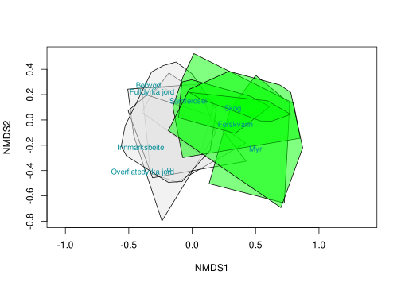
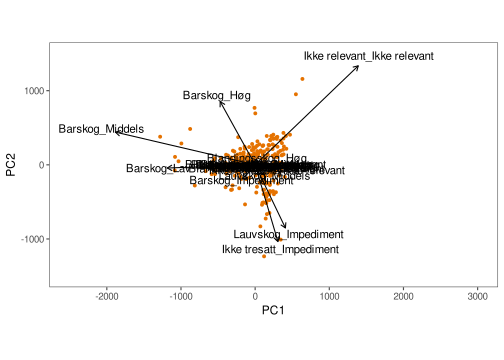
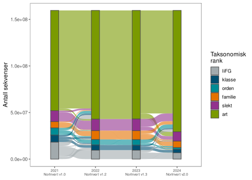
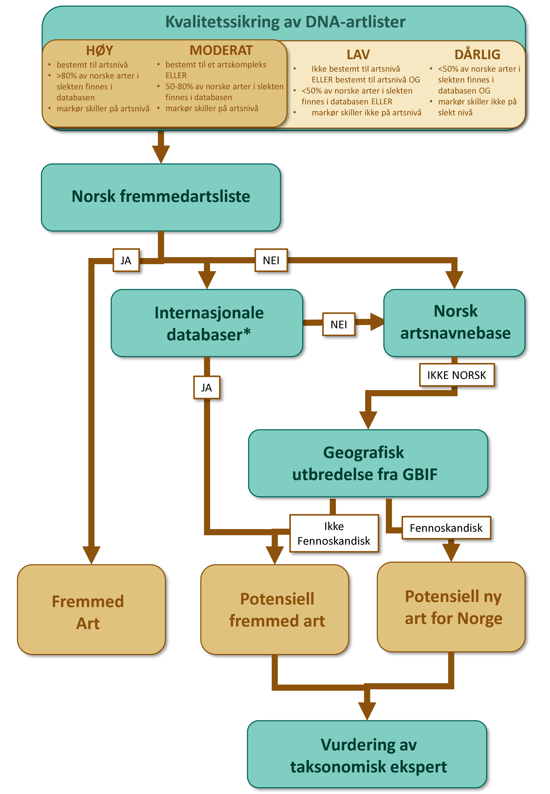
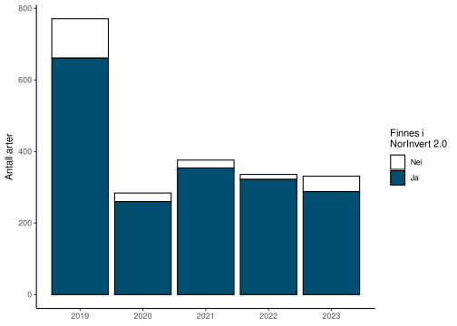
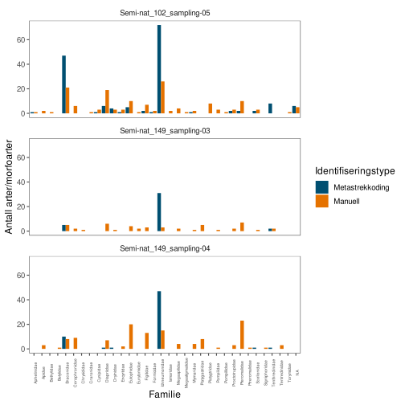
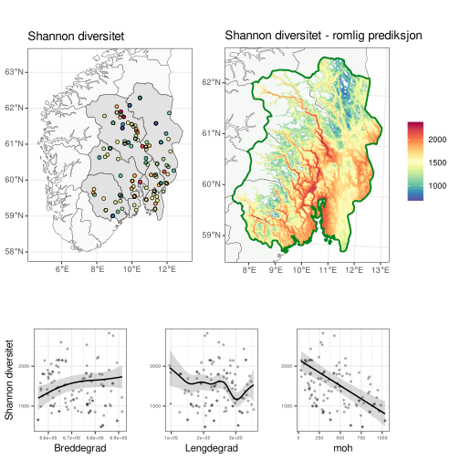
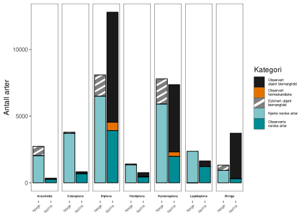

Norsk Insektovervåking
Rapport fra feltsesongen 2024
Jens Åström , Jostein Gohli , Tone Birkemoe , Jaelle Brealey , Sondre Dahle , Marie Davey , Torbjørn Ekrem , Frode Fossøy , Arne Laugsand , Narve Nikolai Opsahl , Vanessa Solvang Klocke , Arnstein Staverløkk , Anne Sverdrup-ThygesonSiteres som:
Åström, J., Gohli, J., Birkemoe, T., Brealey, J., Dahle, S., Davey, M., Ekrem, T., Fossøy, F., Laugsand, A., Opsahl, N., A., Solvang Klokke, V., Staverløkk, A. & Sverdrup-Thygeson, A. 2025. Norsk insektovervåking. Rapport fra feltsesongen 2024. NINA Rapport 2526. Norsk institutt for naturforskning. http://hdl.handle.net/11250/3167288
Kvalitetsgranskere: Anders L. Kolstad
Ansvarlig signatur: Jørgen Rosvold
Sammendrag
Denne rapporten dokumenterer virksomheten i Norsk insektovervåking (NorIns) i 2024 og presenterer noen hovedfunn. Til denne rapporten har referansebasen for DNA-strekkoder og rutinene for artsidentifisering fått en stor oppdatering, noe som har forbedret evnen til å identifisere det innsamlede materialet. Hele dataserien er kjørt igjennom på nytt, noe som betyr at resultater fra tidligere år også er oppdatert. Det totale artsantallet, og antallet rødlistede og fremmede arter, har derfor økt betydelig. Vi estimerer nå at overvåkingsprogrammet har fanget nesten 27 000 arter insekter siden starten i 2020 (sammenlignet med litt over 20 000 som ble rapportert i fjorårets rapport). I tillegg er det funnet et par hundre andre arter leddyr. De fleste av artene kan fortsatt ikke kobles til kjente referansestrekkoder og dermed få et artsnavn, men drøyt 6 200 arter har i denne versjon et artsnavn med tilstrekkelig konfidanse for å rapporteres. For hele Norge er det kjent ca. 20 000 arter insekter fra tidligere, altså betydelig færre enn hva bare dette overvåkingsprogrammet har registrert. Det er imidlertid velkjent at det mangler en fullstendig artsliste for alle insektarter i landet. Faktisk utgjøres en betydelig del av insektmangfoldet i Norge og den øvrige verden av såkalte «dark taxa», der artene enten er ukjente for vitenskapen eller svært vanskelige å skille. DNA-metodikk er den eneste praktiske måten å håndtere et så stort og rikt materiale som dette i en løpende overvåking, og teknikken muliggjør også storskala overvåking av insekter som ennå ikke er navngitt.
I 2024 ble overvåkingen utvidet til å inkludere også semi-naturlig mark på Vestlandet, og programmet er dermed landsdekkende for semi-naturlig mark. Skog overvåkes foreløpig kun på Østlandet, men overvåkingsprogrammet ville hatt stor nytte av å inkludere denne habitattypen i flere regioner. Sammenlignet med andre land har Norge kommet langt med insektovervåking basert på malaisefeller og metastrekkoding, men det er planer på å implementere lignende overvåkingsmetodikk i øvrige deler av Europa.
Etter fire år med enhetlig nedgang snudde tallene for insektbiomasse opp på Østlandet og Sørlandet. Den tilsynelatende kraftige nedgangen er dermed brutt, selv om utviklingen varierer mellom regioner. Det kreves lengre tidsserier før man kan si noe om vedvarende trender i biomassen. Værvariabler fortsetter å forklare en stor del av variasjonen i fangstmengder, men dette dreier seg først og fremst om variasjoner innenfor sesongene eller mellom områder. Vi har fortsatt ikke en god kvantifisert forståelse av variasjoner mellom år, hvilket realistisk sett krever lengre tidsserier.
Det første omdrevet på Østlandet ble fullført i 2024 og vi kan nå oppsummere noe av insektfunnene i regionen. Vi ser tydelige mønstre i biomangfoldets fordeling, der høyde over havet er en kraftig prediktor og der det største mangfoldet finnes i dalførene og lavlandet omkring Oslo. Litt uventet viser ikke biomassen like tydelige mønstre. En foreløpig analyse antyder at temperatursummen er en viktig prediktor for insektaktiviteten, og datasettet kan brukes til å analysere trender og forskjeller i fenologi mellom ulike insektgrupper. Vi har også sett på hvordan sammensetningen av artssamfunnet – som kan betraktes som et fingeravtrykk av hvilke insekter du finner på et spesifikt sted – varierer over hele landet. Dette viser det unike ved hver nasjonale region, ved at forskjellen eller avstanden mellom individuelle artsfellesskap i stor grad samsvarer med deres geografiske plassering, og dermed ligner et nasjonalt kart.
Vi har i 2024 undersøkt resultatene av å knuse fangstene i vindusfeller før metastrekkoding, i håp om å forbedre identifiseringen av biller i skogslokalitetene. Dette ble såpass vellykket at vi anbefaler å fortsette med denne metodikken for vindusfeller. Gevinsten i mengden artsfunn vurderes som tilstrekkelig høy til å motivere tapet av muligheten til å etterprøve funnene. Det vurderes fortsatt som viktig å oppbevare det hovedsakelige fellematerialet fra malaisefellene, for verifisering av arer og for å muliggjøre videre analyser som ennå ikke er praktisk gjennomførbare.
Abstract
This report documents the activities of Norwegian Insect Monitoring (NorIns) in 2024 and presents some key findings. For this report, the reference database for DNA barcodes and the routines for species identification have received a major update, which has improved the ability to identify the collected material. The entire data series has been re-processed, meaning that results from previous years are also updated. The total number of species, and the number of red-listed and alien species, has therefore increased significantly. We now estimate that the monitoring program has captured almost 27,000 insect species since its start in 2020 (compared to just over 20,000 reported in last year’s report). In addition, a couple of hundred other arthropod species have been found. Most of these species still cannot be linked to known reference barcodes and thus be given a species name. However, a little over 6 200 species of insects are now identified to species with enough confidence to be reported. For all of Norway, approximately 20,000 insect species are known from before, which is significantly fewer than what this monitoring program alone has recorded. However, it is well-known that a complete species list for all insect species in the country is lacking. In fact, a significant part of the insect diversity in Norway and the rest of the world consists of so-called “dark taxa,” where the species are either unknown to science or very difficult to distinguish. DNA methodology is the only practical way to handle such a large and rich material in ongoing monitoring, and it also enables large-scale monitoring of insects that have not yet been identified.
In 2024, the monitoring was expanded to include semi-natural land also in Western Norway, making the program nationwide for semi-natural land. Forests are currently only monitored in Eastern Norway, but the monitoring program would benefit greatly by including this habitat type in the more regions. Compared to other countries, Norway has come far in insect monitoring based on malaise traps and metabarcoding, and there are aims to implement comparable monitoring programs in other parts of Europe.
After four years of a uniform decline, the figures for insect biomass turned upwards in Eastern and Southern Norway. The seemingly sharp decline has thus been broken, although the development varies between regions. Longer time series are required before anything can be said about sustained trends in biomass. Weather variables continue to explain a large part of the variation in catch quantities, but this primarily concerns within-season or between-locality variations. We still do not have a good quantified understanding of inter-annual variations. Realistically, this also requires longer time series.
The first five-year cycle in Eastern Norway was completed in 2024. We can now summarize some of the finds in the region and observe clear patterns in the distribution of biodiversity. Altitude is a powerful predictor, and the greatest diversity is found in the valleys and lowlands around Oslo. Somewhat unexpectedly, biomass does not show equally clear patterns. A preliminary analysis suggests that the temperature sum is an important predictor for insect activity, and the dataset can be used to analyze trends and differences in phenology among various insect groups. We have also looked at how the composition of the species community – which can be considered a fingerprint of which insects you find in a specific location – varies across the country. This highlights the uniqueness of each national region, in that the difference or distance between individual species communities largely corresponds to their geographical location, thus resembling a national map.
In 2024, we investigated the results of crushing window trap catches before metabarcoding, hoping to improve the identification of beetles in forest localities. This proved so successful that we recommend continuing with this methodology for window traps. The gain in the number of species findings is considered sufficiently high to outweigh the loss of the ability to verify the findings. It is still considered important to store the malaise trap material for species verification and to enable further analyses that are not yet practically feasible.
1 Innledning
Insekter er den mest artsrike gruppen av organismer på jorden, og står for omtrent to tredjedeler av de kjente dyrene i Norge. De utgjør også en betydelig biomasse, til tross for sin lille individuelle størrelse. Insekter spiller en viktig rolle som predatorer og plantespisere, parasitter, nedbrytere og pollinatorer. De er også en viktig fødekilde for andre dyr, som for eksempel fugler. Store endringer i mengden insekter, eller tap av viktige arter, vil derfor kunne ha stor effekt på det øvrige økosystemet. Flere rapporter beskriver at bestandene av insekter går ned verden over (Hallmann et al. 2017; Strien et al. 2019; Seibold et al. 2019; Wagner 2020; Soroye et al. 2020; Klink et al. 2020), men vi vet lite om hvordan situasjonen har endret seg over tid i Norge. En god nasjonal overvåking er derfor viktig for å få konkret kunnskap om hva som skjer med insektene. NINA har på oppdrag fra Miljødirektoratet utarbeidet et program for systematisk overvåking av insekter generelt i landet, med mål om å kartlegge og følge med på situasjonen for insektene i Norge.
Denne rapporten sammenfatter virksomheten i 2024, det femte året med generell overvåking av terrestriske insekter i Norge. Utforming, analyser og tekst følger i store trekk tidligere rapporter (Åström et al. 2022, 2023), men resultatene er oppdatert og gjenspeiler funnene fra 2024. Analyser og figurer er basert på hele datasettet fra 2020-2024, med mindre annet er angitt.
Siden 2020 har det blitt samlet inn insekter i økosystemene skog og semi-naturlig mark på Østlandet. I 2021 ble programmet utvidet til semi-naturlig mark i Trøndelag, i 2022 til Sørlandet, i 2023 til Nord-Norge, og i 2024 til Vestlandet. Overvåkingsopplegget bygger på gjenbesøk av samme lokalitet etter fem år, og at man i hver femårsperiode overvåker 50 lokaliteter per habitatstype og region i et fullt omløp. Vi er dermed fortsatt i oppstartsfasen på landsbasis, men Østlandet fullførte et helt omdrev i 2024 og starter første gjenbesøk i 2025.
Malaisefeller er den viktigste innsamlingsmetodikken for alle lokaliteter, med 1 felle per lokalitet. I tillegg benytter vi 4 vindusfeller i hver av skogslokalitetene. Malaisefellene fanger et bredt spekter av flygende insekter, men spesielt mange tovinger og veps. Vindusfellene fanger et mindre antall insekter, men er særlig rettet mot biller, som har en betydningsfull rolle i skogen. Identifiseringen av insektene gjøres ved hjelp av DNA-metastrekkoding etter en “mild lysering” av fellematerialet, som i stor grad bevarer materialet og muliggjør manuell etterkontroll av enkeltindivider. Vi understreker at artsfunnene fra denne overvåkingen ikke er morfologisk verifiserte, men baserer seg på DNA-sekvenser og matching mot referansebibliotek. Selv om manuell verifisering av lagrede prøver i mange tilfeller vil være mulig, er dette for tidkrevende til å gjøres regelmessig. Fellene tømmes annenhver uke, med ambisjon om å dekke hoveddelen av flyvesesongen (fra april til oktober). Samme felletyper brukes hvert år. I tillegg til DNA-analyser, måles den totale biomassen i prøvene som våtvekt etter å ha helt av etanolen.
Målet med overvåkingen er ikke å oppdage alle insektarter i landet, men å måle utviklingen i generell mengde og artskomposisjon hos insektsamfunnene, samt å samle inn forklaringsvariabler som hjelper oss å forstå og forutse endringer. All fangst- og identifiseringsmetodikk vil være forbundet med visse skjevheter, da noen artsgrupper fanges oftere enn andre, og noen identifiseres lettere enn andre. Her står man ovenfor flere tekniske valg, som alle kan påvirke datamaterialet noe, der vi i løpet av oppstartsfasen gjør oss viktige erfaringer. Når et overvåkingsprogram er etablert, er det viktig å holde innsamlings- og identifiseringsmetodikken så konstant som mulig over tid for å forenkle sammenligningen av dataene.
Overvåkingsprogrammet fanger inn en svært stor diversitet av insekter. Denne diversiteten måles ved at all insekt-DNA deles inn i separate arter, basert på forskjellene i DNA-sekvensene. I tillegg måler vi innenartsvariasjonen hos artene, ved å registrere forskjeller i DNA innenfor hver art. DNA-metastrekkoding er en svært kraftfull teknologi, som kan håndtere store prøvemengder relativt kostnadseffektivt. Den har også noen utfordringer, hvor den største er å plassere DNA-kodene i et taksonomisk tre og sette kjente artsnavn på dem. Samtidig er man ikke avhengig av at alle DNA-varianter får et artsnavn for å kunne følge med på endringer i biodiversitet over tid, eller for å kunne sammenligne biodiversitet i forskjellige områder. Vi kan derfor overvåke og følge utviklingen til mange insekter vi ennå ikke vet navnet på. Vi vil etter hvert også kunne navngi flere og flere arter, ettersom referansebibliotekene utvides. Man vil dermed også kunne navngi flere og flere insekter i data fra tidligere år.
Denne rapporten inneholder – i tråd med forrige år – en karakterisering av økosystemene semi-naturlig mark og skog, samt et generelt bilde over insektfunnene på de ulike lokalitetene. Vi beskriver også kort miljøvariablene vi samler inn og undersøker deres forklaringsevne for variasjonen i insektfangstene, primært i biomasse. Vi estimerer totalt antall arter for de regioner og habitater vi har undersøkt, og ser nærmere på hvordan diversiteten og komposisjonen av insektsamfunn fordeler seg mellom lokaliteter og over landet. Referansebasen som ligger til grunn for artsidentifiseringen har i løpet av året fått en stor oppdatering. Vi beskriver dette arbeidet og statusen for programmets identifiseringsevne. I år har vi i tillegg utført en enkel analyse av hvordan biomangfoldet og biomassen fordeler seg på Østlandet, samt når på året biomangfoldet topper seg fordelt på noen viktige insektgrupper. Vi oppsummerer videre funn av rødlistede og fremmede arter, samt arter som ikke tidligere er offentlig kjent fra Norge.
2 Lokaliteter
Overvåkingsprogrammet dekker totalt 250 lokaliteter i semi-naturlig mark spredt over hele landet, og 50 lokaliteter i skog på Østlandet. Programmet ble startet i 2020 i begge habitatstyper på Østlandet, og overvåkingen av semi-naturlig mark har gradvis blitt oppskalert til andre landsdeler. I 2024 ble programmet landsdekkende ved utvidelsen til semi-naturlig mark på Vestlandet, i tillegg til de fire tidligere regionene Sørlandet, Østlandet, Trøndelag og Nord-Norge. Sørlandet defineres her som fylkene Agder og Rogaland, og Vestlandet defineres som fylkene Vestland og Møre og Romsdal. De øvrige landsdelene følger tradisjonelle grenser (Østlandet: Oslo, Viken, Innlandet, Vestfold og Telemark; Trøndelag: Trøndelag fylke; Nord-Norge: Nordland, Troms og Finnmark).
Overvåkingen benytter et forskjøvet design, beskrevet i Åström et al. (2019), hvor 10 nye lokaliteter overvåkes i hver økosystemtype og hver region de første fem årene. Når disse fem sesongene er gjennomført, starter man en ny syklus med gjenbesøk av lokalitetene. Første gjenbesøk på Østlandet blir i 2025, og andre gjenbesøk i 2030. Denne rulleringen er koordinert med omløpet i Arealrepresentativ naturovervåking (ANO) (Tingstad et al. 2019). Et forskjøvet design gir mer støy mellom år, men øker antallet lokaliteter og dermed muligheten for å undersøke effekter av geografisk betingede påvirkningsfaktorer på insektforekomster. En stor del av mellomårs‐støyen er sannsynligvis forårsaket av variasjon i regionale værforhold, som vil være den samme uavhengig hvilke lokaliteter man besøker. Store deler av rest-variasjonen vil man kunne kontrollere for ved å inkludere lokale forklaringsvariabler.
2.1 Utvalg av lokaliteter
Insekter kan flyge over store områder, og fangstene i en felle representerer derfor et større areal, og ikke bare de kvadratmeter der selve fella er plassert. Overvåkingslokalitetene er derfor valgt ut for å representere forekomsten av habitatstypen i et større omkringliggende landskap.
Utvelgelse av lokalitetene i overvåkingen benytter SSB sitt 500x500m landsdekkende rutenettverk og kan dermed enkelt kobles sammen med diverse nasjonal statistikk. Så langt som mulig bruker vi de 1 000 tilfeldig utvalgte rutene som inngår i ANO (Tingstad et al. 2019). Dette øker sjansen for samlokalisering med annen kartlegging. Lokalitetene ble i 2024 valgt ved samme metode som tidligere år, hvilket i hovedsak er et randomisert utvalg, stratifisert etter habitatstype. For skogslokalitetene tar vi utgangspunkt i rutene som skal kartlegges samme år i ANO, for å knytte sammen disse datasettene og for å få en full ANO‐registrering på en kostnadseffektiv måte. Fra disse rutene valgte vi manuelt ut 10 SSB500-ruter på Østlandet som inneholdt mer enn 50 % skog (etter arealtype i AR5). For å ta høyde for eventuelle nei fra grunneiere velger vi i realiteten ut noen ekstra kandidatflater hvert år. For å få god representasjon av variasjonen i regionen, ble lokalitetene valgt for å maksimere geografisk spredning. Metodikken fortsetter å fungere bra for skog, og dekker en stor variasjon i skogtyper og høydenivåer.
Utvalget er mer utfordrende for semi‐naturlig mark (Åström et al. 2020a, 2020b). ANO‐kartleggingen treffer sjelden denne habitatstypen og vi er derfor nødt til å velge fra et større randomisert utvalg som tilsvarer det for ANO. Som tidligere år opererte vi med kriteriene at rutene skulle inneholde minst 30 % fulldyrka jord, overflatedyrka jord eller innmarksbeite til sammen, samt minst 20 % overflatedyrka jord eller innmarksbeite til sammen. For å utelukke mer intensivt dyrkede arealer, forkastet vi ruter som inneholdt mer enn 50 % fulldyrka jord. Kartgrunnlaget var også her AR5. Denne noe kompliserte utvalgsprosedyren er et resultat av metodisk uttesting og dialog med oppdragsgiver. Fra utvalget trakk vi 10 tilfeldige ruter på Østlandet, 10 i Trøndelag, 10 på Sørlandet, og 10 i Nord‐Norge, pluss noen ekstra som reserve ved eventuelle nei fra grunneiere.
Vi gjør leseren oppmerksom på at “Semi‐naturlig mark” etter disse kriterier utgjør en mindre del av jordbrukslandskapet i Norge, som typisk domineres av mer intensivt dyrkede arealer, ofte med en enda kraftigere menneskelig påvirkning på insekter. Hvis man hadde brukt en enda striktere definisjon av semi‐naturlig mark, for eksempel Naturtyper i Norge (NiN) sin “Semi‐naturlig eng”, “Semi‐naturlig strandeng” og “Kystlynghei” ville dette ha resultert i et utvalg som er enda mindre representativ for dagens jordbruksmark. Etter at lokalitetene er valgt ut, kontaktes grunneiere for tillatelse for oppsett av insektfeller. Dette ble i hovedsak gjort over telefon, gitt den korte tidsrammen. Generelt er grunneierne positive, men det kan ta litt tid å opprette og etablere kontakt med alle grunneiere. Store grunneiere med formaliserte kontaktveier tar som regel lengre tid enn privatpersoner.
2.2 Landskapskomposisjon for lokaliteter
De fleste av landskapene rundt fellene er heterogene og inneholder flere arealtyper. Dette gjelder spesielt de semi-naturlige lokalitetene, hvilket gjenspeiler situasjonen for mye av jordbrukslandskapet i Norge. Figur 2 viser en NMDS-ordinasjon av variasjonen i landskapskomposisjon for de to økosystemtypene i 2024. Ordinasjonen er basert på totalt arealdekke av hver arealtype i AR5, innenfor en 1 km bufferradius rundt lokalitetene. Polygonene i figuren ringer inn de to økosystemtypene, og tallene viser enkelte lokaliteter (f.eks. 50 = lokalitet ‘Skog_50’). De fleste skogslokaliteter ligger langt til venstre i NMDS-akse 1, hvilket preges av stor andel skog og myr, mens noen er inneklemt i kulturlandskap og derfor ligger lengre til høyre. Lokalitetene i semi-naturlig mark preges fremfor alt av mindre deler skog og myr, og inneholder typisk stor variasjon i de resterende arealtypene innmarksbeite, fulldyrka jord, overflatedyrka jord og åpen fastmark. Akse 2 gjenspeiler i stor grad jordsmonnet og potensialet for intensivt jordbruk, med overflatedyrket jord eller åpen fastmark nederst, og fulldyrka jord og mer bebyggelse høyest.
Figur 3 viser en tilsvarende figur for hele datasettet, der hver polygon viser habitatstypene for hvert enkelt år (semi-naturlig mark i grått og skog i grønt). Fordelingen av landskapskomposisjon for semi-naturlig mark varierer lite mellom år mens skog varierer mer. Variasjonen for skogslokaliteter kan være et resultat av tilfeldig variasjon, da disse kun består av 10 lokaliteter hvert år, mens det er flere semi-naturlige lokaliteter.


Figur 4 viser eksempler på landskapene rundt lokalitetene i semi-naturlig mark og Figur 5 viser tilsvarende for skogslokalitetene. Lokalitetene er valgte for å vise variasjonen i langskapskomposisjon og finnes i utkanten av polygonene i Figur 2. Felleplasseringen velges for å best representere habitattypen men det tas også praktiske hensyn i forhold til adgang, dyrka mark og beitedyr.
3 Felletømminger
Feltsesongen 2024 gikk fra slutten av april til slutten av oktober, i stort sett i samme omfang som i 2023. Overvåkingen ble startet først på Vestlandet og Sørlandet, tett etterfulgt av Trøndelag. Deretter fulgte oppstart i Nord-Norge og Østlandet, tilnærmet samtidig. Den største utfordringen med feltarbeidet er å komme i gang tidlig nok over hele landet, slik at vi fanger opp den første flyve-aktiviteten. Målsetningen forøvrig er å fange insekter gjennom hele den dominerende flyve-perioden, og samle inn data fra april til oktober ved alle lokaliteter. Vi tar sikte på å gjennomføre tidlig igangsetting i 2025 ved å velge lokaliteter og kontakte grunneiere tidligere, samt å spre feltarbeidet med oppsett av feller over flere team.
Fellene ble tømt annenhver uke av åtte ulike team, basert henholdsvis i Stavanger, Oslo, Lillehammer, Trondheim, Tromsø, og Varangerbotn. I tillegg ble flere feller på semi-naturlig mark tømt av grunneiere. Antall dager i hver felle-periode varierte noe av praktiske årsaker. Det nøyaktige antallet felle-dager for hver tømming er notert og kan brukes i analyser for å standardisere funnene. Tabell 3 oppsummerer antallet felle-tømminger og det totale tidsspennet for hver lokalitet i 2024. Tabell 2 viser det totale antallet felle-prøver som ble samlet inn.
For noen insektarter kan etanolen virke tiltrekkende, men fellene er i hovedsak passive, da de kun fanger insekter som selv flyr inn i fellene. Sammenlagt for alle lokaliteter har vi i løpet av 2020-2024 samlet inn 51.5 kg insekter, målt i våtvekt uten etanolen (konserveringsvesken insektene samles i) (Tabell 1). Fordelt per lokalitet og år tilsvarer det omtrent 183 gram. Relativt vanlige tovinger står for brorparten av biomassen. Vi vurderer at innsamlingen har svært liten effekt på de lokale populasjonene av insekter, og at vår metodikk også kan benyttes i f.eks. verneområder.
| År | Start | Slutt | Antall lok. | Antall prøver | Våtvekt (kg) |
|---|---|---|---|---|---|
| 2020 | 2020-05-11 | 2020-09-18 | 20 | 379 | 8.54 |
| 2021 | 2021-06-07 | 2021-10-18 | 30 | 526 | 7.12 |
| 2022 | 2022-05-09 | 2022-10-23 | 40 | 750 | 10.33 |
| 2023 | 2023-04-11 | 2023-10-22 | 50 | 994 | 10.20 |
| 2024 | 2024-04-22 | 2024-10-20 | 60 | 1076 | 15.36 |
| Sum | - | - | - | 3725 | 51.55 |
| Felletype | Antall prosesserte felleprøver |
|---|---|
| Malaisefelle | 676 |
| Vindusfelle | 400 |
| Region | Lokalitet | Antall felletømminger | Start prøvetaking | Slutt prøvetaking |
|---|---|---|---|---|
| Østlandet | Skog_41 | 10 | 2024-05-25 | 2024-10-17 |
| Østlandet | Skog_42 | 10 | 2024-05-24 | 2024-10-17 |
| Østlandet | Skog_43 | 10 | 2024-05-28 | 2024-10-17 |
| Østlandet | Skog_44 | 10 | 2024-05-21 | 2024-10-14 |
| Østlandet | Skog_45 | 10 | 2024-05-20 | 2024-10-14 |
| Østlandet | Skog_46 | 10 | 2024-05-19 | 2024-10-19 |
| Østlandet | Skog_47 | 10 | 2024-05-31 | 2024-10-16 |
| Østlandet | Skog_48 | 10 | 2024-05-31 | 2024-10-16 |
| Østlandet | Skog_49 | 10 | 2024-06-01 | 2024-10-19 |
| Østlandet | Skog_50 | 10 | 2024-06-05 | 2024-10-19 |
| Sørlandet | Semi-nat_101 | 12 | 2024-04-29 | 2024-10-14 |
| Sørlandet | Semi-nat_102 | 12 | 2024-04-28 | 2024-10-14 |
| Sørlandet | Semi-nat_103 | 12 | 2024-04-28 | 2024-10-14 |
| Sørlandet | Semi-nat_104 | 12 | 2024-04-27 | 2024-10-16 |
| Sørlandet | Semi-nat_105 | 12 | 2024-04-27 | 2024-10-16 |
| Sørlandet | Semi-nat_106 | 12 | 2024-04-26 | 2024-10-16 |
| Sørlandet | Semi-nat_107 | 12 | 2024-04-26 | 2024-10-16 |
| Sørlandet | Semi-nat_108 | 12 | 2024-04-26 | 2024-10-17 |
| Sørlandet | Semi-nat_109 | 12 | 2024-04-25 | 2024-10-17 |
| Sørlandet | Semi-nat_110 | 12 | 2024-04-25 | 2024-10-17 |
| Vestlandet | Semi-nat_111 | 13 | 2024-04-25 | 2024-10-17 |
| Vestlandet | Semi-nat_112 | 13 | 2024-04-24 | 2024-10-17 |
| Vestlandet | Semi-nat_113 | 13 | 2024-04-24 | 2024-10-17 |
| Vestlandet | Semi-nat_114 | 13 | 2024-04-24 | 2024-10-17 |
| Vestlandet | Semi-nat_115 | 13 | 2024-04-24 | 2024-10-16 |
| Vestlandet | Semi-nat_116 | 13 | 2024-04-23 | 2024-10-16 |
| Vestlandet | Semi-nat_117 | 13 | 2024-04-23 | 2024-10-16 |
| Vestlandet | Semi-nat_118 | 13 | 2024-04-23 | 2024-10-16 |
| Vestlandet | Semi-nat_119 | 13 | 2024-04-22 | 2024-10-16 |
| Vestlandet | Semi-nat_120 | 13 | 2024-04-22 | 2024-10-18 |
| Østlandet | Semi-nat_121 | 10 | 2024-05-23 | 2024-10-15 |
| Østlandet | Semi-nat_122 | 10 | 2024-05-23 | 2024-10-15 |
| Østlandet | Semi-nat_123 | 10 | 2024-05-24 | 2024-10-15 |
| Østlandet | Semi-nat_124 | 10 | 2024-05-23 | 2024-10-15 |
| Østlandet | Semi-nat_125 | 10 | 2024-05-30 | 2024-10-17 |
| Østlandet | Semi-nat_126 | 10 | 2024-05-22 | 2024-10-15 |
| Østlandet | Semi-nat_127 | 10 | 2024-05-22 | 2024-10-14 |
| Østlandet | Semi-nat_128 | 10 | 2024-06-03 | 2024-10-18 |
| Østlandet | Semi-nat_129 | 10 | 2024-06-04 | 2024-10-18 |
| Østlandet | Semi-nat_130 | 10 | 2024-05-16 | 2024-10-18 |
| Trøndelag | Semi-nat_131 | 13 | 2024-04-23 | 2024-10-18 |
| Trøndelag | Semi-nat_132 | 13 | 2024-04-23 | 2024-10-18 |
| Trøndelag | Semi-nat_133 | 13 | 2024-04-23 | 2024-10-18 |
| Trøndelag | Semi-nat_134 | 13 | 2024-04-22 | 2024-10-18 |
| Trøndelag | Semi-nat_135 | 13 | 2024-04-25 | 2024-10-16 |
| Trøndelag | Semi-nat_136 | 13 | 2024-04-25 | 2024-10-16 |
| Trøndelag | Semi-nat_137 | 13 | 2024-04-25 | 2024-10-16 |
| Trøndelag | Semi-nat_138 | 12 | 2024-04-24 | 2024-10-20 |
| Trøndelag | Semi-nat_139 | 12 | 2024-04-29 | 2024-10-20 |
| Trøndelag | Semi-nat_140 | 12 | 2024-04-29 | 2024-10-20 |
| Nord-Norge | Semi-nat_141 | 10 | 2024-06-01 | 2024-10-19 |
| Nord-Norge | Semi-nat_142 | 10 | 2024-06-02 | 2024-10-19 |
| Nord-Norge | Semi-nat_143 | 10 | 2024-06-02 | 2024-10-19 |
| Nord-Norge | Semi-nat_144 | 10 | 2024-05-31 | 2024-10-19 |
| Nord-Norge | Semi-nat_145 | 10 | 2024-05-31 | 2024-10-18 |
| Nord-Norge | Semi-nat_146 | 10 | 2024-05-30 | 2024-10-18 |
| Nord-Norge | Semi-nat_147 | 10 | 2024-05-29 | 2024-10-16 |
| Nord-Norge | Semi-nat_148 | 10 | 2024-05-29 | 2024-10-17 |
| Nord-Norge | Semi-nat_149 | 10 | 2024-05-28 | 2024-10-17 |
| Nord-Norge | Semi-nat_150 | 9 | 2024-05-28 | 2024-10-17 |
4 Forklaringsvariabler
I tillegg til innsamling av insekter registreres også data på en rekke potensielle forklaringsvariabler, ved fellene og i det omkringliggende landskapet. Dette er viktig for å kunne å kunne estimere effektene av enkelte påvirkningsfaktorer, men også for å kunne kontrollere for disse effektene og dermed bedre forstå mønstre i insektforekomster og forandringer over tid. Alle faktorer som påvirker insektforekomster er naturligvis ikke kjente, og dette prosjektet klarer heller ikke å samle inn alle variabler vi mener er potensielt viktige. Nedenfor følger en beskrivelse av de forklaringsfaktorer prosjektet samler inn, både i felt og via tilgjengelige data-ressurser.
4.1 ANO-registreringer
Lokalitetene i skog blir registrert innenfor den regulære Arealrepresentative naturovervåkingen (ANO) (Tingstad et al. 2019). Ved disse lokalitetene har vi derfor som regel areal-data fra 18 sirkler á 250 m i hver rute. Ved de semi-naturlige lokalitetene blir av kostnadsgrunner kun én tilsvarende sirkel kartlagt.
En sentral måling i ANO-registreringen er dekningsgrad og antall karplanter innenfor ANO-rutene (1 m). Figur 6 viser variasjonen i disse målene, der dataene er delt opp etter år og region for å kunne avdekke eventuelle trender og forskjeller. I utgangspunktet ønsker vi ikke en tidstrend i disse figurene, da utvalget av lokalitetene er tenkt å være tilfeldig, og siden vi ikke forventer at forekomsten av karplanter forandrer seg i løpet av et fåtall år. I 2020 og 2021 ble etter de ANO-sirklene som falt innenfor dyrket mark registrert som ‘Sterkt endret mark’ og det ble ikke gjort en videre artsinventering i disse sirklene. I 2022 ble muligheten for å kartlegge også disse rutene åpnet, og det ble gjort en mer detaljert kartlegging. Vi ser derfor færre lokaliteter med 0 % dekningsgrad av karplanter i 2022. Fra og med 2023 ble sirkelen som undersøkes fritt plassert, i stedet for å velge en sirkel etter ANO sitt vanlige nettverk. Sirkelen plasseres så nære som mulig til insektfellen, hvilket gjør at vi kan unngå fulldyrket mark. Posisjonene ble satt med høypresisjons-GPS med en typisk nøyaktighet på 1-5 cm (dårligste nøyaktighet < 1 m). Det ser ut å være en del variasjon i dekningsgrad mellom år, men det trenger ikke bety at det er en trend – det kan skyldes naturlig variasjon, for eksempel i utvalget av lokaliteter.
4.2 Skogsregistreringer
På skogslokalitetene ble også en forenklet landsskogstaksering gjennomført (Ørka et al. 2019), etter samme metode som tidligere år (Åström et al. 2020b). Her velger vi den av ANO-sirklene på 250 m som var nærmest insektfellene og som samtidig gjenspeiler skogstypen i hele ruta (500 x 500 m). Posisjonene ble som i ANO-kartleggingen målt inn med høypresisjons-GPS, og registreringene ble foretatt av samme personell som den øvrige ANO-registreringen.
Figur 7 viser skogkarakteren ved lokalitetene i årene 2020-2024. 2024 var første året uten skoger eldre enn 100 år, men hadde heller ikke noen svært unge skoger.
4.3 Klima og vær
4.3.1 Mellomårsvariasjon i værforhold
Insekter er små ektoterme dyr (avhengig av eksterne varmekilder) som påvirkes sterkt av lokale værforhold. I nordlige klima er de ofte begrenset av kalde temperaturer og vil reagere positivt på økt temperatur og solinnstråling. På de varmeste dagene kan også noen grupper minske sin aktivitet, f.eks. humler som er spesialiserte på kalde forhold og som til dels er endoterme (kan produsere noe varme selv). Insekter kan også være sensitive for uttørking, og responderer typisk positivt på høy luftfuktighet (men ikke nedbør, som kan hindre flyving). Værforholdene i kritiske faser, som for eksempel i løpet av larveutviklingen eller i overvintringen, kan ha svært stor påvirkning på senere populasjonsstørrelser. Det kan derfor forekomme forsinkede effekter av dårlig vær; for eksempel vil kaldt og variabelt vær på våren kunne påvirke insektforekomster negativt resten av sesongen.
Figur 8 - Figur 12 viser endringer fra 2013 til 2024 i juni-august været, som er de viktigste månedene for insektinnsamling, i de ulike geografiske regionene. Dataene er hentet fra met.no sin dataserie, der de bruker observerte klimadata fra nettverket av klimastasjoner til å interpolere verdier på 1x1km skala over hele landet for hver dag, siden 1950-tallet. Sammenstillingen viser at de seneste somrene har vært relativt våte, bortsett fra i Nord-Norge, som derimot har sett en stadig økning i temperatur.
4.3.2 Innenårsvariasjon i værforhold
Insekter reagerer selvfølgelig også på mer finskala variasjoner i klima enn årlige gjennomsnitt. Figurene ovenfor vil derfor utelate mye interessant informasjon. Nedenfor vises variasjonen i værforhold gjennom året som glidende gjennomsnitt over 5 dager for én sentral lokalitet i hver region. Data er hentet fra met.no sine interpolerte data av hver 1 x 1 km rute i landet.
2024 hadde noen overgripende mønstre som er verd å merke seg. Bortsett fra Nord-Norge, hadde de fleste deler av landet en særdeles varm og tørr mai. Det gjelder spesielt Vestlandet og Trøndelag (Figur 17 og 19), men mønsteret er også synlig på Sørlandet og Østlandet (Figur 13 og 15). Etter det fulgte en kaldere juni og juli, men sammenlignet med historiske verdier fra 1990 til idag, ser man at de fleste områder hadde ganske normale sommertemperaturer i 2024. På Vestlandet og i Trøndelag noterte vi påtagende mange sommerfugler og humler i mai, men aktiviteten avtok betraktelig med væromslaget i juni. Bortsett fra i Nord-Norge, var nedbørmengdene generelt høye. Det var ingen spesiell periode som var ekstremt nedbørsrik, i stedet var nedbørmengden generelt høy hele året (bortsett fra mai) (Figur 14, 18, 16, og 20).
Nord-Norge skiller seg ut med en særlig varm juli, august og september samt generelt lite nedbør, selv om 2024 ikke var like tørr som 2023 (Figur 22 og 22).


4.4 Mikroklima fra loggere
Værdata fra Meteorologisk institutt er svært verdifulle, da de er heldekkende i tid og rom, og gjenspeiler forholdene på landskapsskala (1 km rutenett), som er relevant for mange insekter. Mer finskala klimavariasjon spiller også en stor rolle for aktiviteten hos insektene. Derfor benytter vi ved hver fellelokalitet to loggere som sammen registrerer værdata med svært høy oppløsning. Vi måler temperatur både i skygge og sol, luftfuktighet og mengden sollys (Figur 23, Figur 24). Vi mangler derimot lokale data på vindforhold og nedbør. Dette kan delvis kompenseres for ved å ta i bruk variasjonen i verdiene for temperatur, luftfuktighet og lys, se Kapittel 4.3.

Generelt er det en positiv sammenheng mellom insektfangster og temperatur, da insekter i mindre grad flyr i kaldt vær. Dette viser seg som høyere antall observerte arter i varmere perioder (Figur 26), men særlig i mengden biomasse (Figur 25). Dette forholdet mellom temperatur og biomasse er sterkere i semi-naturlig mark enn i skog. De høyeste biomassene finnes også generelt i semi-naturlig mark. Sammenhengen mellom temperatur og biomasse hos insekter ser ut å være ikke-lineær, og vi bruker derfor den logaritmiske verdien av biomassen i de statistiske modellene nedenfor.
4.5 GIS-data
I tillegg til forklaringsvariablene vi samler inn i felt, finnes det mye tilgjengelig informasjon via offentlige GIS-kilder. Vi beskriver her variablene vi samler inn fra diverse GIS-kilder som potensielle forklaringsvariabler for insektforekomster. Listen er på ingen måte komplett, og mer utdypende analyser kan utføres i fremtiden.
4.5.1 Arealtyper i AR5
AR5 står for arealressurskart, der ressurskartleggingen “ARTYPE” gjenspeiler det økonomiske potensialet til et areal(Ahlstrøm et al. 2019). Selv om den faktiske bruken ikke alltid er den samme, gir denne datakilden verdifull kunnskap om komposisjonen av et landskap (se f.eks. Figur 4 og Figur 5). I tillegg har AR5 også informasjon om skogstype og skogsbonitet, hentet fra skogresurskartet SR16 (Astrup et al. 2019). Fordelen med å bruke disse datakildene er at de dekker store deler av landet, og at man derfor kan trekke ut informasjon for et gitt område, for eksempel fra et helt landskap rundt insektfellene. Manuell kartlegging av disse kvalitetene i landskapet vil trolig være mye bedre, men ville kreve stor arbeidsinnsats.
Det kan nevnes at den nye “Grunnkart for bruk i arealregnskap” vil komplementere og muligens erstatte bruket av AR5 i prosjektet i fremtiden.
I landskapene rundt lokalitetene hvor vi har samlet insekter har vi totalt 9 arealtyper (innenfor et bufferområde på 1 km). Vi har også hele 21 kombinasjoner av skogtype og bonitet. Disse til sammen 30 forklaringsvariablene er altfor mange til å teste individuelt, med tanke på deres potensielle innvirkning på insektforekomster. Vi reduserer derfor antallet forklaringsvariabler gjennom en ordinasjon, der man samler så mye variasjon som mulig i et overkommelig antall “akser”. Vi begynner med å sammenstille det totale arealet innen en buffer på 1000 m radius rundt lokalitetene, for hver av disse 30 “forklaringsvariablene”. Vi gjør deretter en separat PCA-ordinasjon for “ARTYPE” og skogvariablene, og bruker de to første PCA-aksene fra disse ordinasjoner til å modellere fellefangstene. Disse to aksene fanger opp det meste av variasjonen i arealtype og skogtype (henholdsvis 82 % og 56 %).
Figur 27 viser resultatet av ordinasjonen av arealtype. Vi ser at landskapene rundt våre insektfeller først og fremst varierer i hvor mye dyrket mark de har, kontra skog (første akse), og i tillegg hvor mye åpen fastmark de har (akse 2). Disse aksene inngår i forklaringsmodellene nedenfor med navnene AR5-arealtype: PCA-akse 1 og AR5-arealtype: PCA-akse 2. I denne ordinasjonen har vi ikke skalert variasjonen av de ulike arealtypene da vi ønsker å inkludere arealene på likt grunnlag fremfor å spre lokalitetene mest mulig ut (se Figur 2). At de øvrige arealtypene overlapper sterkt i figuren gjenspeiler at det er relativt liten variasjon i mengdene av disse arealtyper i området rundt lokalitetene.
4.5.2 Skog i AR5
Figur 28 viser tilsvarende PCA for skogtype, der variablene gjenspeiler hver kombinasjon av dominerende treslag og produktivitet/bonitet (f.eks. Barskog_Høy). PCA-akse 1 dekker først og fremst variasjonen i mengden skog kontra ikke tresatt mark (“Ikke relevant”), der mengden skog minker langs aksen. PCA-akse 2 dekker først og fremst variasjonen i bonitet, der boniteten øker langs aksen. Disse to variabler inngår i forklaringsmodellene nedenfor. Et generelt mønster er at områder med høy bonitet oftest representeres av barskog, mens impediment kan sammenfalle med mye lauvskog.

4.5.3 Romlig komposisjon
Vi beregner også Shannon-indeks av arealtyper (AR5-ARTYPE) innenfor landskapsbufferne, der en høy Shannon-indeks indikerer et landskap som består av mange forskjellige arealtyper i lik mengde. Shannon-indeks av arealtyper ble beregnet gjennom rutinen lsm_l_shdi fra pakken landscapemetrics (Hesselbarth et al. 2019), på en rastrert versjon av AR5-arealtype med en skala på 10m x 10m. Figur 29 viser fordelingen av disse verdiene i datasettet. Skoglokaliteter har generelt lavere Shannon-indeks enn semi-naturlig mark. Forøvrig er fordelingen relativt lik mellom år (ulike lokalitetsutvalg) og regioner, men Vestlandet ser ut å ha en forholdsvis høy diversitet av arealtyper. Det gjenstår å se om dette mønstret er bestandig over et helt omdrev.
4.5.4 Lineære element
Vi ville også evaluere hvordan grenser mellom ulike arealtyper spiller inn. Derfor beregnet vi også den totale omkretsen av lineære elementer innenfor landskapsbufferne (sirkel med radius 1 km), ved å slå sammen nærliggende polygoner av lik arealtype og summere den totale perimeterlengden av de resulterende polygonene. Denne databehandlingen ble utført med funksjonene ST_Union og ST_Perimeter i PostGIS (V.2.5.5) og R-pakken lwgeom (Pebesma 2021). Hva som regnes som et “lineært element”, eller grenser, i forhold til flyvende insekter kan diskuteres, og dataene som analyseres her er sikkert ikke et perfekt mål. Denne metoden inkluderer alle grenser mellom forskjellige arealtyper i AR5-kartlaget. Det kan for eksempel være en skogkant, en åkerkant til en beitemark, eller en veikant. Slike “lineære elementer” oppleves ikke nødvendigvis lineære sett med menneskelige øyne, da de kan se ut til å svinge betydelig. Likevel danner de ofte et skille i landskapet som flygende insekter enten samles ved, eller følger på sin ferd mellom områder. Figur 30 viser fordelingen av den totale mengden lineære elementer i landskapet til lokalitetene våre. Mengden lineære elementer øker naturlig med antallet arealtyper man har i et landskap, særlig når flere arealtyper utgjør et relativt stort areal. Dette betyr at man må tolke effekten av antall arealer og lineære elementer sammen. Som for Shannon‐indeks, ser vi en mindre mengde lineære element i skogslandskap, sammenlignet med semi‐naturlig mark. Forøvrig er fordelingen relativt lik mellom regioner og over år (ulike lokalitetsutvalg).
5 Identifisering av arter med DNA-metastrekkoding
Identifiseringsmetodikken er uforandret siden i fjor og dette kapittel er derfor i stort sett en gjentakelse av forrige års rapport (Åström et al. 2023). Vi fortsetter å følge protokollen med en mild lysering av insektene for ekstraksjon av DNA som vi har brukt gjennom flere år (Åström et al. 2020a, 2020b), og som følger svært tett på Iwaszkiewicz-Eggebrecht et al. (2023). Denne metoden medfører at vi kan bevare insektene for morfologiske analyser i etterkant, og dermed kan sjekke DNA-baserte funn av interessante arter samt identifisere taksa som mangler i referansebibliotekene.
Protokollen ser fortsatt ut å fungere greit og vi fulgte samme prosedyre i 2024. Vi følger også den samme pipelinen for bioinformatiske analyser som vi har utviklet tidligere, men med en oppdatert referansebase (se nedenfor).
5.1 Forbehandling av prøvene
Forbehandling består i å måle etanolkonsentrasjon, sile av etanolen og veie prøvene før lysering og ekstraksjon av DNA. Etter en del modifiseringer av protokollen i 2021 måler vi nå bare våtvekt (etter at konserveringsvæske, etanolen, er helt av). Vi har også som tidligere år tilsatt ekstra arter til prøvene som en positiv kontroll (spiking). Dette gjør vi for å kunne evaluere protokollen og muligens på sikt si noen om relativ biomasse av ulike arter mellom prøvene. I samtlige prøver ble det derfor tilsatt 10 melormer (Tenebrio molitor), 3 sirisser (Gryllus assimilis) og 10 frøbiller (Callosobruchus maculatus). Disse artene representerer ulike størrelser, taksa og hardhet, forekommer ikke vilt i Norge, men er likevel lett tilgjengelige kommersielt eller via egenproduksjon på lab. Etanolen ble silt av manuelt gjennom en 250 µm filterduk før flasken ble plassert opp ned i en trakt for videre avrenning i 35 minutter (skal etter det ikke dryppe oftere enn 1 gang per 20 sekunder). Den brukte filterduken ble deretter klippet opp og lagt med i prøven for å få med eventuelle insektdeler som festet seg i duken. Ny filterduk ble anvendt for hver prøve og filterkork ble kloret for å unngå kontaminering mellom prøver. Etter siling ble flaskene veid med kork for våtvekt av innsamlet materiale. 30 tilfeldige tomme flasker ble veid som referanse, og middelverdien av disse blir trukket fra i beregningen av nettovekten av insektbiomassen.
5.2 DNA-ekstraksjon og etterbehandling
Felleprøvene ble lysert ved å tilsette ATL-buffer og proteinase-K (100mL ATL = 1mL proteinase-K) i tilpasset volum, slik at alle insektene ble dekket av bufferløsningen, og deretter inkubert i 3.5 timer med risting (120 RPM) på 56°C. Til sist ble 200 µL av bufferløsningen brukt i en DNA-ekstraksjon ved hjelp av et Blood & Tissue Kit (Qiagen).
For å stoppe lyseringsprosessen i felleprøvene og bevare materialet bedre ved lagring, ble flaskene tømt for bufferløsning, fylt med vann og silt to til tre ganger med 500 µm filtereduk for å fjerne det meste av bufferløsningen. Deretter ble flaskene fylt med den samme etanolen som først ble silt av (under forarbeid), eventuelt med påfyll for å nå minimum 90 % etanol, og satt på lager. Løsning med ATL-buffer/proteinase K/skyllevann ble samlet opp i spesialbeholdere og sendt til avfallshåndtering.
Prøvene ble midlertidig lagret føre og etter prosessering i et kjølerom i NINA-huset i Trondheim. Etter det blir de langtidslagret i en frysekontainer ved NINA sitt separate lagerbygg (se Kapittel 8).
5.3 DNA-amplifisering og sekvensering
En del av det mitokondrielle genet COI ble oppkopiert (amplifisert) ved hjelp av primerne BF3-BR2 (Elbrecht et al. 2019) i en standard to-trinns Illumina protokoll. Første PCR (polymerase chain reaction) inkluderte primere med «overhang adaptor»-sekvenser, mens Illumina-indekser ble tilsatt i den andre PCR-kjøringen. PCR-produktene ble kvalitetssikret på en Tape Station (Agilent 4200) og renset med kuler (MAG-BIND RXN PURE PLUS) etter hver PCR. Etter uttesting av antall PCR-sykler gjennom qPCR-analyser i 2021, besluttet vi å redusere antallet sykluser fra 35 til 22. Til slutt ble prøvene normalisert og slått sammen til et bibliotek for sekvensering. Alle prøvene ble sekvensert på en Illumina NovaSeq maskin ved Norwegian Sequencing Centre (NSC) i Oslo.
5.4 Bioinformatikk
Primerne ble fjernet med programmet cutadapt v. 1.9.1, og DNA-sekvensene ble deretter filtrert, kvalitetssikret og feilrettet med programmet dada2 (Callahan et al. 2016) for å generere ASV-er (Amplicon Sequence Variants). ASV-er er de kvalitetssikrete DNA-sekvensene vi bruker for å skille arter, men også for å se på genetisk variasjon innen arter. For å klassifisere ASV-ene til arter, brukte vi programmet RDP-Classifier, som er en «Bayesisk sannsynlighetsestimator» (Wang et al. 2007). Istedenfor å kun bruke en overordnet likhet (identity) mellom en ASV fra våre data og en referanse-DNA-sekvens i Genbank, bruker denne metoden en trenet («trained») database som gir en sannsynlighet for at en ASV tilhører en viss art/slekt/familie osv.
Databasen som ble brukt for taksonomiske bestemmelser i pilotforsøket i 2019 var COIClassifier v4, en eukaryot database laget av Porter og Hajibabaei (2018) med hovedfokus på nordamerikanske arter. I 2020 utviklet NINA en egen versjon av denne databasen, supplert med 4061 COI-sekvenser for norske arter, og ytterligere 2908 ble lagt til i 2022. Nå i 2024 fikk databasen en hovedversjonsoppgradering, og COI-referansesekvenser fra 47 520 flere evertebratarter ble lagt inn i referansebiblioteket (Tabell 4). Kort beskrevet består oppgraderingen i at vi setter sammen referansesekvensene fra COIClassifier v5.1 med strekkoder fra norske arter som finnes i BOLD og GenBank (prosessen beskrevet i Kapittel 5.8). Sekvensene blir videre kvalitetssikret og kontrollert for taksonomiske synonymer. Kontaminanter ble fjernet (hovedsakelig feilmerkede sekvenser fra mennesker og endosymbiotiske bakterier), og duplikatsekvenser ble filtrert bort for å optimalisere ytelsen med RDP-algoritmen. Siden 2020 har andelen norske arter som dekkes av referansedatabasen innen Arachnida, Collembola, Chilopoda, Diplopoda og Insecta økt fra 57,8 % til 72,5 % (Tabell 5). Kontinuerlig forbedring av databasen betyr at stadig flere av sekvensene som registreres i overvåkingsprogrammet blir identifisert til artsnivå med høy konfidens (se Figur 31).
| Klasse | COIClassifier v4 | NorInvert v1.1 | NorInvert v1.2 | NorInvert v1.3 | NorInvert v2.0 |
|---|---|---|---|---|---|
| Arachnida (edderkoppdyr) | 4778 | 4952 | 5124 | 5124 | 10682 |
| Chilopoda (skolependere) | 135 | 147 | 147 | 147 | 251 |
| Collembola (spretthaler) | 268 | 377 | 388 | 388 | 570 |
| Diplopoda (tusenbein) | 246 | 246 | 246 | 246 | 565 |
| Insecta (insekter) | 65660 | 69426 | 73211 | 72151 | 110729 |
| Ikke målgruppe | 39693 | 39695 | 39698 | 39698 | 62583 |
| Class | Order | Arter påvist i Norge | av hvilke i database | % i db |
|---|---|---|---|---|
| Arachnida | Araneae | 660 | 590 | 89.4 |
| Arachnida | Ixodida | 11 | 9 | 81.8 |
| Arachnida | Mesostigmata | 326 | 58 | 17.8 |
| Arachnida | Opiliones | 20 | 15 | 75.0 |
| Arachnida | Pseudoscorpiones | 20 | 18 | 90.0 |
| Arachnida | Sarcoptiformes | 493 | 193 | 39.1 |
| Arachnida | Trombidiformes | 510 | 167 | 32.8 |
| Chilopoda | Geophilomorpha | 11 | 8 | 72.7 |
| Chilopoda | Lithobiomorpha | 12 | 12 | 100.0 |
| Chilopoda | Scolopendromorpha | 2 | 2 | 100.0 |
| Chilopoda | Scutigeromorpha | 1 | 1 | 100.0 |
| Diplopoda | Chordeumatida | 6 | 3 | 50.0 |
| Diplopoda | Glomerida | 1 | 1 | 100.0 |
| Diplopoda | Julida | 23 | 17 | 73.9 |
| Diplopoda | Polydesmida | 10 | 7 | 70.0 |
| Diplopoda | Polyxenida | 1 | 1 | 100.0 |
| Entognatha | Collembola | 361 | 221 | 61.2 |
| Entognatha | Protura | 1 | 0 | 0.0 |
| Insecta | Archaeognatha | 3 | 1 | 33.3 |
| Insecta | Blattodea | 10 | 10 | 100.0 |
| Insecta | Coleoptera | 3713 | 3183 | 85.7 |
| Insecta | Dermaptera | 4 | 3 | 75.0 |
| Insecta | Diptera | 6504 | 5130 | 78.9 |
| Insecta | Ephemeroptera | 48 | 47 | 97.9 |
| Insecta | Hemiptera | 1350 | 933 | 69.1 |
| Insecta | Hymenoptera | 5914 | 3305 | 55.9 |
| Insecta | Lepidoptera | 2365 | 2348 | 99.3 |
| Insecta | Mecoptera | 6 | 6 | 100.0 |
| Insecta | Megaloptera | 5 | 4 | 80.0 |
| Insecta | Neuroptera | 62 | 55 | 88.7 |
| Insecta | Odonata | 53 | 51 | 96.2 |
| Insecta | Orthoptera | 32 | 30 | 93.8 |
| Insecta | Phthiraptera | 211 | 56 | 26.5 |
| Insecta | Plecoptera | 35 | 35 | 100.0 |
| Insecta | Psocoptera | 65 | 52 | 80.0 |
| Insecta | Raphidioptera | 4 | 4 | 100.0 |
| Insecta | Siphonaptera | 51 | 20 | 39.2 |
| Insecta | Strepsiptera | 2 | 2 | 100.0 |
| Insecta | Thysanoptera | 130 | 59 | 45.4 |
| Insecta | Trichoptera | 205 | 204 | 99.5 |
| Insecta | Zygentoma | 5 | 3 | 60.0 |

5.5 Kvalitetssikring av DNA-basert identifisering av arter
Med store datasett generert fra DNA-metastrekkoding er det en stor utfordring å kvalitetssikre artslistene. Falske positiver, dvs. påvisning av en art som egentlig ikke finnes i prøven, er generelt en utfordring med datasett fra DNA-metastrekkoding. Ofte er denne type feilbestemmelser koblet til feil og mangler ved referansedatabasen. Vi har derfor utviklet et flytskjema for hvordan vi har klassifisert og kvalitetssikret dataene (Figur 32), og beskrevet dette nærmere her.
Alle DNA-sekvensene ble først filtrert, kvalitetssikret, og feilrettet for å unngå støy i dataene og unngå et kunstig høyt estimat av arter og genotyper. Selv om vi bruker primere som stort sett amplifiserer DNA fra rekken leddyr (Arthropoda), kan det forekomme amplifisering av små mengder av DNA fra andre organismer. Ved bruk av RDP classifier og vår in-house database fjernet vi først de ASV-ene som ikke ble klassifisert til målgruppene (der målgruppe er klasse Arachnida, Chilopoda, Collembola og Insecta). Dette DNAet tilhører hovedsakelig bakterier, sopp og planter som driver inn i fellene gjennom luften eller transporteres utenpå eller inne i insektene.
Alle offentlige sekvensdatabaser er ufullstendige og mangler referansesekvenser for en god del organismer. I tillegg inneholder de flere sekvenser som er feilbestemt, altså at de har fått feil artsnavn koblet til en gitt referansesekvens. Vi kvalitetssikret mulige feilbestemmelser, spesielt der referansesekvenser manglet, ved hjelp av BLAST mot Genbank (NCBI-nr). I tillegg gjorde vi en manuell vurdering av ASV’ene som pekte på feilbestemte referansesekvenser i databasen og fjernet de som ikke tilhørte målgruppene.
Fra RDP-Classifier har vi laget en artsliste basert på målgruppe-sekvensene og vår in-house referansedatabase. Men siden denne database ikke er komplett verken for norske eller ikke-norske arter, må vi gjøre en del vurderinger for å si noe om hvor godt et artstreff er, og dette kaller vi arts-konfidens og angir denne som høy, moderat, lav eller dårlig (Figur 33). Arter som vurderes til moderat, lav, eller dårlig arts-konfidens, har vi i denne rapport utelatt fra de analyser og tabeller som er avhengig av artsidentitet (f.eks. rapportering av rødlistede og fremmede arter, potensielt fremmede arter eller nye arter for Norge, selv om en første skanning etter fremmede arter også inkluderer arter med moderat konfidens).

5.6 Horisontskanning og identifisering av nye arter for Norge
Med storskala artsinventering har vi mulighet til å registrere mye av det kjente artsmangfoldet i Norge, deriblant rødlistede og fremmede arter, men vi oppdager også nye arter som ikke har vært påvist i Norge tidligere. Vi har derfor kryss-sjekket artslistene mot norsk rødliste fra 2021 og fremmedartslisten fra 2023. Ved hjelp av Artsnavnebasen, GBIF, og flere internasjonale databaser over fremmede arter i europeiske land (DAISIE-partners 2008; Saul et al. 2017; Pagad et al. 2018; Roy et al. 2019; Brundu et al. 2022) ar vi også utarbeidet to lister: en over arter som er påvist tidligere i Fennoskandia (basert på forekomster i GBIF, men ikke i Norge), og en annen over arter som ikke er funnet i Fennoskandia tidligere (se Figur 34).

5.7 Sannsynlighet for klassifisering til artsnivå
Alle DNA-kopier blir først delt inn i grupper etter metodikken beskrevet ovenfor, der hver gruppe tilsvarer en art. Neste trinn er å sette et navn på disse grupper (“arter”). Hvis mulig, tilordner vi et artsnavn til ‘arten’. Dersom det ikke lar seg gjøre, forsøker vi med et slektsnavn, deretter familienavn, og så videre oppover i taksonomien. Andelen av ‘arter’ vi klarer å navngi med et artsnavn varierer betydelig mellom de ulike ordnene. Generelt sett er det oftere mulig å navngi de DNA-kopiene som er vanlige, altså fra arter vi fanger hyppig og i store antall. I Figur 35 har vi på x-aksen sortert alle “arter” etter hvor mye DNA vi har samlet totalt fra hver av dem. Lengst til venstre er arten med mest DNA, fulgt av art nr 2 i forhold til mengde DNA, og så videre. I Figur 35 (A) viser Y-aksen hvor mange av “artene” som har blitt gitt et artsnavn, kun et slektsnavn, kun et familienavn og så videre. Den vertikale streken i Figur 35 (A) viser grensen for 90 % av alle DNA-kopier i datasettet (til venstre for streken). Av disse artene bestemmer vi ca. 80 % til art. Men vi ser også at 90 % av DNA-kopiene representerer en liten andel av artene vi påviser (1615 av totalt 26981 arter), dvs at de aller fleste artene i datasettet finnes til høyre for denne streken. Dette samsvarer også med Figur 75 der en liten relativ del av artene dominerer fangstene. Til sist viser de nedadgående horisontale kurvene at vi har mindre sannsynlighet for å bestemme en DNA-kopi til art jo sjeldnere denne kopien er i datasettet. Dette tolker vi som at vi har DNA-referanser fra de mest vanlige artene i referansedatabasen, men ikke i like stor grad fra de mer sjeldne artene. I Figur 35 (B) viser Y-aksen den relative mengden av “artene” som får et artsnavn koblet til seg, det vil si sannsynligheten for å identifisere en DNA-streng til art. Her ser vi store forskjeller mellom ulike ordener. Sannsynligheten for artsbestemmelse av biller (Coleoptera) og størsteparten av sommerfuglene (Lepidoptera) er svært god, mens den er lavere for en stor del av tovingene (Diptera) og vepsene (Hymenoptera). Dette stemmer godt med hva vi vet om dekning i referansedatabasene våre, det vil si at det mangler mange referanser for disse grupper. De to sistnevnte gruppene er også svært artsrike, hvilket kan forklare hvorfor disse grupper ikke er strekkodet til samme nivå som enklere grupper.

5.8 Strekkoding av referanser for norske insekter
Vi har også i år tatt vevsprøver av arter som mangler eller har lav representasjon fra Norge i Barcode of Life Data Systems (https://www.boldsystems.org). I tillegg har vi komplementert databasen med DNA-strekkoder fra arter der avgrensningen er usikker. Det meste av materialet har blitt samplet ferskt gjennom sesongen, og individer fra eksperter utenfor prosjektkonsortiet har bidratt på gruppene Hymenoptera og Lepidoptera. Totalt har det blitt tatt prøver av 582 individer fra 318 taksa, hvorav 213 prøver er fra Hemiptera, 194 fra Hymenoptera, 103 fra Lepidoptera, 67 fra Coleoptera og to fra Diptera. Artene blir lagt til i BOLD løpende og på dette tidspunkt finner vi 77 Hemiptera, 81 Hymenoptera, 55 Lepidoptera og en Diptera, men det jobbes med å få resultater på resterende taksa. Prøver fra nord til sør i landet er representert med hele 305 unike plasser, med de fleste i de sørlige områdene (Figur 36). Alle data vil bli tilgjengelig gjennom det åpne datasettet DS-ENTONOR6 i BOLD.

Nytt i år er at vi har gjort alt labarbeid tilknyttet ekstraksjon, pcr og sekvensering lokalt på NTNU Vitenskapsmuseet. Ved å benytte et Oxford Nanopore Technologies MinION instrument og en egnet pipeline for DNA-sekvensering av COI har vi kunnet unngå forsendelser og ventetid hos ekstern underleverandør. Selv om vi fremdeles er i en innkjøringsfase, har vi oppnådd en sekvenseringssuksess (det vil si en brukbar DNA-sekvense for et individe) på 74 prosent. I tillegg til egenproduksjon av DNA-strekkoder, er det også andre prosjekter i Norge som bidrar til referansebiblioteket for norske insekter. Blant annet kartleggingsprosjekter finansiert gjennom Artsprosjektet og deltakelse i internasjonale forskningsprosjekter slik som Biodiversity Genomics Europe.
Nye strekkoder blir regelmessig lagt til i prosjektets referansebibliotek. Dette ble senest gjort ett år tilbake, men vil bli gjentatt igjen i løpet av 2025. Kort beskrevet foregår det slik at vi kryssjekker vår referansebase mot NorTaxa, som er kuratert av Artsdatabanken, for å få en liste med norske arter vi savner strekkoder for. Denne listen blir siden sjekket automatisk mot BOLD, og opp til 5 strekkoder for hver art som mangler blir høstet og lagt til i vår referansebase. Hvis det finnes flere sekvenser å velge mellom, blir sekvensene fra individer fanget i Norge prioritert. Finnes de ikke fra Norge, letes det etter sekvenser fra Norden, deretter Europa og til slutt resten av verden. Denne prosess fører til at de fleste referansestrekkoder som genereres i forbindelse med NorIns blir tatt inn i prosjektets referansebibliotek, unntatt underarter og prøver med usikker artsbestemmelser. (Figur 37) viser hvor mange strekkoder som har blitt lagt til på denne måte gjennom årene. Den oppdaterte referansebasen blir videre kvalitetssikret for å optimalisere algoritmens funksjon og for å unngå innsetting av feilbestemte sekvenser.

5.9 Verifisering av identifisering fra strekkoder
Artsidentifisering gjennom metastrekkoding er svært kostnadseffektiv, men er ikke ukomplisert eller uten problemer. De fleste feilidentifiseringene skyldes som nevnt at det mangler referanser i biblioteket, eller at en referanse som er tatt fra offentlige kilder er feil. Denne typen feil kan vi kalle falske positive, og de rettes best opp gjennom å strekkode flere arter, slik at man får treff på rett art, eller at man retter opp i enkelte feil i referansebasene. Etterkontroll av denne typen feil gjøres kanskje mest effektivt ved å lete etter en bestemt art i en flaske, som man av en eller annen grunn har flagget som mistenkt. Et eksempel på dette er fluen Physiphora alceae som ble etterprøvd i 2024 av Jørn Gustad, som også nylig har funnet arten selv. Den er ikke kjent fra Norge tidligere, og er også den første representanten for slekten Physiphora (Figur 38).
5.9.1 Mild lysrering og metastrekkoding av vepser
En annen type feil er at en art rett og slett ikke oppdages i en flaske, såkalte falske negative. Vi undersøker her denne typen feil, i forhold til vepser (Hymenoptera) og biller (Coleoptera), som fra tidligere er kjent som utfordrende for metastrekkoding etter myk lysering. Vepser fra tre malaisefellefangster ble sortert manuelt til familie, og antallet morfoarter ble estimert for hver familie. Identifiseringen ble gjort relativt kjapt, og det er sannsynlig at det går an å oppdage enda flere arter ved en grundigere gjennomgang, f.eks. i familiene Ichneumonidae og Braconidae. Disse tall sammenlignes med antallet operasjonelle arter som ble funnet gjennom metastrekkoding i de samme fellene. Figur 39 viser at mild lysering og metastrekkoding går glipp av mange arter i flere familier. Sett over hele ordenen er antallet “morfoarter” og “operasjonelle arter” likevel sammenlignbare, da metastrekkodingen angir svært mange arter i Ichneumonidae og Braconidae som ikke ble notert ved denne relativt kjappe manuelle gjennomgangen. Dette viser både at metastrekkoding kan misse noen arter på grunn av tekniske utfordringer, mens den finner arter som en manuell identifisering misser på grunn av kapasitetsbrist. Problemet med lav deteksjon av hymenoptera er kjent fra tidligere, og vi vil fortsette å undersøke forbedrede metoder for denne viktige og ekstremt artsrike gruppen.

5.9.2 Knusing respektive mild lysering
Det er siden tidligere kjent at biller fanges dårlig opp gjennom mild lysering og metastrekkoding (Åström et al. (2024)). Dette er spesielt relevant for vindusfellefangstene i skogslokalitetene, som har som hensikt å spesielt fange biller. Her undersøker vi hvordan resultatene for disse fellefangstene ville kunne forbedres gjennom å gå over til å knuse materialet før metastrekkoding. For harde insektarter kan dette frigjøre mer DNA i løsningen og muliggjøre en forbedret deteksjon. Vi sorterte og estimerte antallet morfoarter av biller for 19 vindusfelleprøver etter lysering. Dette var en relativt kjapp gjennomgang, og det er mulig at flere arter ville kunne bli oppdaget med en større arbeidsinnsats gjennom tradisjonelle metoder. Etter det knuste vi prøvene i 50 mL Matrix A rør på en FastPrep 24 maskin (MP Biomedicals), ekstraherte DNA på samme måte som tidligere beskrivet, og gjennomførte deretter en ekstra metastrekkoding på materialet. Vi kan dermed sammenligne tre forskjellige identifiseringsmetoder for biller i de samme vindusfellefangstene. Figur 40 viser at knusing og metastrekkoding ofte gjenfinner like mange eller flere arter enn tradisjonell identifisering. Mild lysering derimot oppdager bare rundt 30 % av artsantallet, sammenlignet med knusing og metastrekkoding (Figur 41).
Gitt dette resultatet anbefaler vi å skifte til knusing av vindusfellematerialet for å forbedre datagrunnlaget for biller i skog. Ulempen er at identifiseringene ikke blir etterprøvbare. Dette problemet er imidlertid mindre for biller enn de fleste andre grupper, da billefaunaen er relativt godt kjent og strekkodet fra tidligere.
Vi sammenlignet også deteksjonen av veps (Hymenoptera) i disse prøvene, altså med eller uten knusing (Figur 42). Selv om disse prøver inneholder relativt lite Hymenoptera er det tydlig ats oppdagbarheten forbedres ved knusing av materialet. Dette tyder på at noe av problemene med deteksjon av Hymenoptera er knyttet til at artene ikke gir fra seg tilstrekkelig mye DNA til lyseringsvæsken. Det er likevel ikke aktuelt å knuse malaisefelleprøvene mener vi, da verdien av å kunne gå tilbake til originalprøven er såpass stor for disse veldig artsrike prøvene.
6 Resultater og diskusjon
6.1 Variasjon av insektbiomasse gjennom sesongen
Insektaktiviteten i tempererte miljøer varierer kraftig gjennom sesongen, og tidspunktet for toppene i aktiviteten kan variere mellom årene. Denne dynamikken påvirkes sannsynligvis mest av lokale værforhold. Figur 44, Figur 45, Figur 46, Figur 47, Figur 48, og Figur 49 viser fordelingen av biomasse ved enkelte lokaliteter gjennom sesongene, delt opp etter geografisk område og habitatstype. Sammenlignet med tidligere år, startet insektaktiviteten tidligere i 2024, og toppene var ikke like konsentrert til høysommermånedene. Dette har sannsynligvis sin forklaring i det varme vårværet i 2024, som ble fulgt av en kaldere sommer og en varmere høst (se f.eks. Figur 13, Figur 17, Figur 15).
Spesielt Sørlandet hadde ikke noen tydelig topp for insektbiomasse i 2024. I tillegg viste både Østlandet og Trøndelag relativt lave nivåer i juni, før nivåene tok seg opp igjen i slutten av juli.
Figurene viser at vi ikke klarte å registrere starten på flygeaktiviteten i flere regioner i 2024. Spesielt på Østlandet ble registreringene startet for sent i 2024. Kun Trøndelag viser tydelig at man startet tidlig nok der.
6.2 Fenologi
Insekter påvirkes som nevnt mye av lokale værforhold. Dette skjer både på liten skala, f.eks. i hvor mange som flyr en gitt dag, men også på større skala gjennom sesongen, der aktiviteten generelt øker fra lave nivåer om våren til en topp i juni-juli, for så å synke om høsten. Studiet av disse mer storskala mønstrene i tid, og hva som påvirker dem, kalles for fenologi. Dette overvåkingsprogrammet begynner å få såpass mye data at det åpner seg muligheter for fenologiske studier. På sikt kan data fra NorIns brukes for å undersøke forandringer i startpunkt og aktivitetstopper for ulike insektgrupper, noe som kan ha store konsekvenser for samspillet med både vekster og andre dyr.
I denne seksjonen viser vi en kort smaksprøve på temaet, gjennom å undersøke utviklingen i artsantallet for de største insektordningene. Vi undersøker altså når på året de fleste artene er på vingene. Aktiviteten kan variere betydelig mellom år, der for eksempel en kald vår et enkelt år kan forsinke utviklingen kraftig. Værforholdene kan også variere mellom regioner, der noen plasser kan oppleve en rask utvikling og mye insektaktivitet mens det er helt stille andre steder. I Figur 50 viser vi hvordan utviklingen av artsantallet varierer i forhold til tidspunkt (til venstre), men også til temperatursummen (høyre). I forhold til tidspunkt varierer toppene betydelig mellom år, og er også mindre tydelige enkelte år. Her ser det altså ut som varmen kommer på ulike tidspunkt mellom årene, men også på ulike tidspunkt for ulike lokaliteter. I forhold til temperatursum er toppene derimot mer like mellom år, og også mer distinkte.
Tidsseriene viser også at vi dessverre har startet innsamlingen for sent enkelte år til å klare å dokumentere starten på sesongen, selv om vi har vært relativt like tidlig ute de fleste år i forhold til temperatursum. Det er en utfordring å plassere ut fellene så tett på snøsmeltingen som mulig.
Denne typen data er også egnet for statistisk modellering, enten der man estimerer tidspunkt for aktiviteten for å slå fast statistisk robuste forandringer, eller der man prøver å forstå årsakene bak aktivitetstopper for ulike insektgrupper. Som et enkelt eksempel har vi modellert artsantallet innen hver av de største insektordnene over sesongen. Fenologien fanges ikke perfekt av en sinus-kurve, som vi har brukt her, og dette skal bare ses som et eksempel på hva man kan gjøre i fremtiden. Figur 51 viser at tovinger og vepser (Diptera og Hymenoptera) har sitt største artsantall i siste halvdel av juli, mens sommerfugler (Lepidoptera) og biller (Coleoptera) har sin topp tidligere. Samme type øvelse kunne gjøres for temperatursum.
Det er også i prinsipp mulig å modellere toppen i aktivitet målt som biomasse. Det vil kreve litt kalibrering i hvordan man fordeler den målte totale biomassen over de ulike insektordnene før vi kan vise det.
6.3 Årlige tidstrender
Et av hovedformålene med overvåkingsprogrammet er å følge den nasjonale utviklingen i total biomasse hos insekter. Figur 52 viser daglig gjennomsnitt av biomassen fra malaisefeller. Figuren inkluderer kun data fra perioden juli-august, der vi har en enkelt sammenlignbar innsamlingsinnsats for alle år. Selv om man ikke bør dra konklusjoner fra korte tidsserier, var den konsekvente nedgangen mellom 2020 til 2023 iøynefallende og skapte noe oppmerksomhet i media. Nå ser vi at tidsserien vender oppover i 2024 for Østlandet og Sørlandet. Vi har dermed ikke lengre har en så entydig trend. Trøndelag og Nord-Norge hadde noe lavere insektmengder i 2024 enn tidligere år og Vestlandet havnet på en lignende nivå som Trøndelag, Sørlandet og Nord-Norge i 2024. Året 2024 markerer også det første året i tidsserien da Østlandet hadde høyere insektbiomasse enn Trøndelag.
Vi vil igjen gjøre leseren oppmerksom på at insekter reagerer kraftig på temperatur, og at variasjonen mellom enkelte år sannsynligvis i stor grad bestemmes av variasjon i værforholdene mellom år. De observerte trendene skal derfor fortsatt vurderes forsiktig gitt at vi har en kort tidsserie. Likevel er det oppløftende å se at tallene ikke fortsatt går stadig nedover i alle områder. Den ulike utviklingen i ulike regioner gjør det også lite sannsynlig at trendene kan skylles noen systematiske feil i overvåkingsprogrammet. I Kapittel 6.4 undersøker vi i hvilken grad lokale værforhold kan forklare utviklingen av insektbiomassen i de ulike regionene og analyserer trendene statistisk.
Figur 53 viser hvor mange arter vi fant i gjennomsnitt per lokalitet, fordelt på år og habitatstype i alle regioner. Oppgangen fra 2020 til 2021 i det totale artsantallet gjenspeiler sannsynligvis at vi endret en labprotokoll og byttet til en sekvenseringsmaskin som gir flere DNA-kopier per prøve. Vi kunne dermed detektere flere arter per prøve fra og med 2021. Figur 54 viser tilsvarende figur for pollinatorer, der vi har valgt ut familiene av bier, sommerfugler og fluer som er ansett som viktige pollinatorer (se Åström et al. (2023) for mer info).
6.4 Sammenheng mellom biomasse av insekter, værforhold og omkringliggende landskapsforhold
I dette avsnittet undersøker vi sammenhengen mellom biomassen av insekter og værforhold, samt det omkringliggende landskapet. Vi har brukt miljøfaktorer som er tilgjengelig via offentlige kilder i tillegg til de vi selv har samlet inn. Dette ikke en fullstendig liste over faktorer som påvirker insektene, og flere forklaringsvariabler kan legges til i fremtiden.
Modelleringsøvelsen nedenfor har noen endringer sammenlignet med tidligere år. Vi bruker nå den logaritmiske verdien av biomassen per dag, fremfor faktisk biomasse per dag. Dette er vanlig ved modellering av insektbiomasse, og det ser også ut til å være et passende valg, gitt forholdet mellom biomasse og temperatur (Figur 25). Merk at denne tilnærmingen innebærer at forklaringsvariablene (og residualene) skal tolkes som multiplikative på originalskalaen (gram per dag), men additive på log-skalaen. Vi går også vekk fra modell-gjennomsnitt (der man vekter sammen resultater fra flere modeller) og presenterer i stedet resultater fra én fullstendig modell. Ved å sammenligne resultatene fra én enkel modell med modellvekting av flere modeller ser vi at de to fremgangsmåtene gir kvalitativt like resultater (ikke vist her).
Som i tidligere år tar vi høyde for storskala romlig og temporær variasjon ved å inkludere lokalitet og ukenummer som tilfeldige effekter i modellen. På den måten vil værvariablene forklare forskjellene mellom lokaliteter innen samme tidsperiode, istedenfor den storskala svingningen innen sesongen eller vedvarende forskjeller mellom lokaliteter. Vi inkluderer ikke lengre en tilfeldig effekt av ukenummer innenfor hvert år (1 | år:uke), da dette kan skjule effekten av påvirkningsfaktorer som varierer på samme skala. Biomasse-mål fra vindusfeller i skog er ikke tatt med da de veier så lite at de i hovedsak vil bidra med støy (fra eksempelvis blad og annet rusk som har falt ned i flasken).
6.4.1 Tidstrend av biomasse
Vi starter med å beskrive tidstrenden av insektbiomassen i de forskjellige regionene i en statistisk modell uten å forsøke kontrollere for noen lokale forklaringsvariabler, (Figur 52). Vi inkluderer region, habitattype og en felles årstrend for alle regioner, som fikserte faktorer. Analysen gjøres med funksjonen lmer i R-pakken lme4, hvilket innebærer at vi antar normalfordelte feil (på logskala). Med andre ord modellerer vi:
\[ \begin{split} log(\frac{biomasse}{antall~felledager}) \sim region + habitattype + år + \\ (1 \mid ukenummer) + (1 \mid lokalitet) \end{split} \tag{1}\]
Man kan også undersøke hvor ulike trendene er i de ulike regionene, selv om estimeringen av de regionale trendene vil være usikker med så korte tidsserier. Vi gjentar derfor øvelsen, men legger til en interaksjon mellom region og årstrend:
\[ \begin{split} log(\frac{biomasse}{antall~felledager}) \sim region + habitattype + år + \\ region:år + (1 \mid ukenummer) + (1 \mid lokalitet) \end{split} \tag{2}\]
| Parameter | Estimate.norm | Estimate | Std. Error | t value |
|---|---|---|---|---|
| Intercept | 0.493 | -0.708 | 0.161 | -4.398 |
| Region: Sørlandet | 0.823 | -0.195 | 0.092 | -2.128 |
| Region: Trøndelag | 1.111 | 0.106 | 0.090 | 1.179 |
| Region: Nord-Norge | 0.841 | -0.173 | 0.105 | -1.644 |
| Region: Vestlandet | 1.108 | 0.102 | 0.145 | 0.709 |
| Habitat: Semi-nat | 2.126 | 0.754 | 0.082 | 9.197 |
| Årstrend | 1.036 | 0.036 | 0.028 | 1.267 |
| Parameter | Estimate.norm | Estimate | Std. Error | t value |
|---|---|---|---|---|
| Intercept | 0.494 | -0.704 | 0.165 | -4.260 |
| Habitat: Semi-nat | 2.126 | 0.754 | 0.082 | 9.200 |
| Region: Sørlandet | 0.801 | -0.222 | 0.283 | -0.786 |
| Region: Trøndelag | 1.177 | 0.163 | 0.271 | 0.603 |
| Region: Nord-Norge | 0.611 | -0.493 | 0.591 | -0.834 |
| Region: Vestlandet | 1.110 | 0.104 | 0.147 | 0.708 |
| Årstrend Østlandet | 1.035 | 0.035 | 0.032 | 1.079 |
| Forskjell årstrend Sørlandet | 1.009 | 0.009 | 0.091 | 0.101 |
| Forskjell årstrend Trøndelag | 0.981 | -0.019 | 0.088 | -0.214 |
| Forskjell årstrend Nord-Norge | 1.096 | 0.092 | 0.168 | 0.546 |
Tabell 6 og Figur 55 (A) viser resultatene fra modellen over biomasse. Semi-naturlig mark har en markant høyere biomasse enn skog (\(\approx 2x\) biomassen i skog), og Trøndelag har overlag mer biomasse enn referansenivået Østlandet (\(\approx 11\) % mer biomasse), selv om dette ikke gjalt for 2024. Med oppgangen i biomasse på Østlandet og Sørlandet i 2024 har vi ikke lengre en tydelig negativ generell trend (Figur 55 (A), Tabell 6). Vi estimerer faktisk en liten oppgang på 3.65 % per år \(((1.036 - 1) * 100 \approx 3.6 \%)\), men usikkerheten overlapper med null. Hvis man tar høyde for den tilfeldige variasjonen mellom år gjennom å inkludere år som en tilfeldig effekt (se f.eks. kommentaren i Daskalova et al. (2021) av analysen til Seibold et al. (2019)) blir tidstrenden enda mer usikker (vises ikke her).
Ikke uventet finner vi ikke noen overbevisende forskjeller i tidstrender for de ulike regionene. Dette ville kreve lengre tidsserier, eller veldig store forskjeller mellom regioner, (Tabell 7 og Figur 55 (B)).
6.4.2 Effekt av værforhold på biomasse av insekter
Tidligere år har vi undersøkt om temperatur, luftfuktighet- og lys målt på insektfellene kunne forklare biomasse av insektene (Åström et al. 2022, 2023). Særlig temperatur og lys har vist seg som viktige variabler. Variasjonen i værvariablene, det vil si hvor mye værforholdene forandret seg innen hver innsamlingsperiode, var også viktige forklaringsvariabler for insektbiomasse.
Variasjon i været har neppe en direkte mekanistisk påvirkning på insektene. Det er derimot sannsynlig at de fanger opp noe av de kortvarige værforholdene i løpet av fangstperioden, som ikke gjenspeiles en middelverdi. For eksempel kan variabelt vær gjenspeile en periode med generelt varmt vær, blandet med korte regnbyger. Slikt vær er ofte bedre for insekter enn vedvarende varmt og tørt vær, eller vedvarende fuktig vær, som mangler varmere perioder.
Vi skalerer alle variabler etter ligningen \(skalert\_x_{i} = \frac{x_i - mean(x)}{stddev(x)}\) for å kunne sammenligne parameterestimatene på likt grunnlag. Med 4 års data har vi nå litt over 1 000 innsamlingstilfeller, og vi tillater oss derfor å se på eventuelle interaksjonseffekter mellom værvariablene.
Den undersøkte modellen ble dermed:
\[ \begin{split} log(\frac{biomasse}{antall~felledager}) \sim habitattype + temperatur + luftfuktighet + lys \\ + variasjon\_temperatur + variasjon\_fukt + variasjon\_lys + \\ temperatur:lys + luftfuktighet:lys + temperatur:luftfuktighet +\\ variasjon\_temp:variasjon\_lys + variasjon\_fukt:variasjon\_lys + \\ variasjon\_temp:variasjon\_fukt\\ habitat\_type + år + (1 \mid uke) + (1 \mid lokalitet) \end{split} \tag{3}\]
Modellen ble kjørt gjennom rutinen lmer i pakken lme4 (Bates et al. 2015), med estimering gjennom “maximum likelihood”. Figur 56 og Tabell 8 viser parameterestimatene til modellen.
| Parameter | Estimate.norm | Estimate | Std. Error | t value |
|---|---|---|---|---|
| Intercept | 0.709 | -0.344 | 0.130 | -2.642 |
| Temperatur | 1.474 | 0.388 | 0.032 | 12.071 |
| Luftfuktighet | 1.100 | 0.095 | 0.030 | 3.221 |
| Lys | 1.385 | 0.326 | 0.077 | 4.250 |
| Variasjon_temp. | 1.008 | 0.007 | 0.029 | 0.254 |
| Variasjon_fukt | 1.084 | 0.080 | 0.034 | 2.356 |
| Variasjon_lys | 0.821 | -0.197 | 0.066 | -2.999 |
| Region_Sørlandet | 0.816 | -0.204 | 0.104 | -1.958 |
| Region_Trøndelag | 1.140 | 0.131 | 0.102 | 1.283 |
| Region_Nord-Norge | 0.878 | -0.130 | 0.122 | -1.068 |
| Region_Vestlandet | 1.245 | 0.219 | 0.164 | 1.336 |
| Habitat_Semi-nat | 1.656 | 0.504 | 0.096 | 5.248 |
| År | 1.001 | 0.001 | 0.032 | 0.035 |
| Temperatur:Fukt | 0.943 | -0.059 | 0.021 | -2.761 |
| Temperatur:Lys | 1.026 | 0.026 | 0.023 | 1.131 |
| Fukt:Lys | 1.014 | 0.014 | 0.021 | 0.655 |
| Variasjon_temp.:Variasjon_fukt | 1.024 | 0.024 | 0.017 | 1.378 |
| Variasjon_temp.:Variasjon_lys | 0.882 | -0.125 | 0.026 | -4.903 |
| Variasjon_fukt:Variasjon_lys | 1.068 | 0.066 | 0.024 | 2.750 |
Da forklaringsvariablene er normalisert til Z-verdier (skalert) kan alle parameterestimatene tolkes på en lik måte. De beskriver alle den estimerte effekten av å endre forholdene med et standardavvik. For eksempel er et standardavvik av temperaturen innen en tømmeperiode (3.65 Celsius). Hvis temperaturen øker med så mye så tilsier modellen at biomassen vil øke 1.474 ganger, dvs med 47.44 % (ikke medregnet interaksjoner). Med andre ord har temperatur en svært sterk positiv effekt på innsamlet biomasse.
Lysintensitet ser også ut til å ha en sterkt positiv effekt på insektbiomassen, da en økning i lysintensitet (med 1 standarddavvik av variasjonen i lysintensitet) forventes å gi en korresponderende økning av insektbiomassen med 38.54 %. Temperatur og lysintensitet ser også ut til å interagere svakt positivt med hverandre, slikt at effekten av lys er litt sterkere ved varmere vær, men denne effekten er statistisk usikker.
I tillegg hadde også variasjonen i lys en sterk negativ effekt. Variasjon i lys kan være grunnet overskyet vær, men også skygge fra for eksempel trær. Effekten interagerte med variasjonen i temperatur. Med andre ord var effekten av variabel lysintensitet enda mer negativ ved variable temperaturer. Luftfuktighet har en positiv effekt, og interagerte med lys. Dette gjaldt også variasjonen i luftfuktighet som interagerte med variasjonen i lys og variasjonen i temperatur, selv om disse interaksjonene var statistisk usikre.
Mange av disse værvariablene korrelerer med hverandre, og vi har flere interaksjoner i modellen. Det er derfor vanskelig å tolke den isolerte effekten av en enkelt variabel. I tillegg er det ikke opplagt at det finnes én modell som er desidert bedre enn alle andre. Men en konklusjon vi tror holder er at i hvert fall lys og temperatur har svært positive effekter på den innfangede insektbiomassen, og at luftfuktighet også virker positivt, selv om dette er en svakere forklaringsvariabel. I tillegg kan variasjonen i været og interaksjoner mellom værvariabler forklare en del av variasjonen i biomasse.
Man bør notere at værforholdene under et tømmeintervall på 2-uker kanskje først og fremst påvirker flyveaktiviteten hos allerede eksisterende insekter, selv om det også kan påvirke selve antallet flyvende individer. Den totale mengden insekter som eksisterer er ofte et resultat av prosesser som varer lengre enn 2 uker, selv om noen insekter kan ha svært korte livssykluser.
Det kan også noteres at estimatet for tidstrenden (År i Tabell 6, Tabell 8) i hovedsak er uforandret, etter å ha “tatt høyde” for disse lokale værvariabler. Med andre ord ser det ikke ut til at tidstrenden kan forklares av dårlig vær i innsamlingsperiodene.
Modellen i Tabell 8 hadde en R2-verdi på 37 % (marginal R2, dvs. ikke gitt de tilfeldige effektene). Med andre ord kan vi forklare litt mer enn én tredjedel av variasjonen i innsamlet biomasse kun ut fra region, habitatstype, temperatur, luftfuktighet og lys. Dette kan sammenlignes med modellen uten klimaloggervariabler som hadde en R2-verdi på 10.7 % (Tabell 6). De lokale klimaforholdene er altså en svært viktig forklaringsvariabel for mengden insekter man fanger. Dette er ikke uventet, da den største variasjonen i fangstene gjenspeiler variasjonen over sesongen, fra kaldt vårvær, over en varm sommer, og til slutt en kald høst. Det kan også nevnes at hvis man tar høyde for de tilfeldige effektene av lokalitet og ukenummer (dvs. bruker kondisjonal R2), kan modellen forklare betydelig mer av variasjonen, nærmere bestemt 72.1 %. Med andre ord kan vi forklare 72.1 % av variasjonen ved en av de kjente lokalitetene og innsamlingstilfellene, hvis vi også har lokale værdata, men “bare” 37 % av variasjonen for en ukjent (f.eks. en ny) lokalitet og tidspunkt.
Til sist, hvis man forenkler modellen, og fjerner de værvariabler som ser ut å være mindre viktige (variablene som overlapper med 0 i Figur 56), så er forklaringsevnen uforandret. Denne mindre værmodellen danner grunnlaget for etterfølgende modeller.
6.4.3 Effekter av vær utenfor innsamlingsperiodene
Været kan også ha vedvarende effekter på insektmengdene, i tillegg til de kortvarige effekter vi undersøkte ovenfor (innenfor hver 2-ukers periode). Størrelsen på en populasjon kan for eksempel påvirkes av værforhold i viktige utviklingsstadier, eller under overvintring. Dette er ikke unikt for insekter, men spiller kanskje ekstra stor rolle for dem, på grunn av deres korte generasjonstid og at de påvirkes så sterkt av værforhold.
I 2023 argumenterte Müller et al. (2023) at den nedadgående trenden vist i Hallmann et al. (2017) til stor grad kunne forklares av tidligere værforhold. Studien til Hallmann et al. (2017) ble kjent i 2017 for at den viste svært store nedganger i insektmengdene. I vernede områder i Tyskland hadde insektbiomassen blitt redusert med hele 75 % over en periode på 27 år. Fremfor alt mente Müller et al. (2023) at temperaturen og nedbøren i løpet av vintermånedene var viktige forklaringsfaktorer til nedgangen av insekter i Tyskland på 2000 og 2010-tallet. De mente at det også kunne forklare hvorfor biomassen tok seg opp igjen i årene etter, da det var mer gunstige værforhold. De fant også at været på våren (april) samt forrige års vår (april) var viktige, og at været ett år tidligere, regnet fra hvert innsamlingstilfelle, spilte en viktig rolle for insektbiomassen. Det kan diskuteres hvor godt de klarer å forklare dynamikken til tidsserien fra Hallmann et al. (2017). For en lengre diskusjon, se for eksempel Åström et al. (2024). Men de værforhold de undersøker forefaller i hvert fall være relevante som potensielle forklaringsvariabler for variasjon i lokale insektmengder.
Vi gjennomførte i 2023 en variant analysene til Müller for å se om effekten av værforholdene under samme perioder også var viktige i Norge. Vi la her til data over temperatur og nedbørsmengder under våren i året før, under sommeren året før, under vinteren og under våren inneværende år, til modellene vist tidligere, med værforhold under selve innsamlingsperiodene. Se Åström et al. (2024) for detaljer. Kort sammenfattet så vi også i Norge klare samband mellom værforholdene under flere av de samme periodene, og den innsamlede insektbiomassen. Nedbørsmengden under vinteren økte insektmengdene etterfølgende år, særlig når det samtidig var kaldt. Men også vårværet så ut å påvirke insektmengdene lengre fram på sesongen. Vi har her gjentatt samme analyse, med data fra 2024 inkludert.
Figur 57 viser parameterestimatene til denne modellen. Merk at værvariablene fra innsamlingsperioden ikke vises, for å gjøre figuren lettere å lese. Som i analysen fra 2023, er flere av variablene relativt sterkt assosiert med insektbiomassen. Faktisk er dette enda tydeligere nå enn i fjor. Men flere av estimatene skiller seg betydelig fra forrige års modell, og noen har til og med bytt tegn. For eksempel var effekten av en varm vår (Temperatur_mai) i hovedsak negativ i 2023, mens den i 2024 i hovedsak er positiv (begge år har positiv interaksjon med nedbør i mai). Samtidig viser årets modell en negativ effekt av fjorårets vårtemperatur, hvilket i hvert fall er konsekvent. Nedbørsmengden under vinteren derimot, er fortsatt knyttet til økte insektmengder året derpå og høy vintertemperatur er knyttet til lavere insektmengder. Som i fjor er kombinasjonen varme og nedbør i vinteren negativ for insektmengdene. Disse modeller bruker data fra hele 200 lokaliteter, spredt over landet, men tidsserien er bare 5 år. Derfor er det mulig at resultatene mest influeres av hvordan insektmengdene varierer mellom plasser, enn over tid. Det vil si, plasser med et visst vintervær, har i regel en viss insektbiomasse og så videre. Modellen fra 2023 var heller ikke noen god prediksjon for 2024 års insektmengder (vises ikke her), hvilket også gjenspeiles i at flere væreffekter nå estimeres annerledes. Sammensatt kan man si at insektbiomassen oppviser relativt sterke statistiske sammenhenger med værforhold, opptil et år tilbake, men at denne type relativt enkle statistiske modeller (i hvert fall ennå) ikke gjør en god jobb i å forutsi neste års insektmengder.
6.4.4 Viktige variabler for biomasse i Skogslokaliteter
Vi testet også hvilke andre av de innsamlede miljøvariablene som kunne forklare biomassen. Dette ble gjort gjennom en multippel regresjon der også de lokale værvariabler som viste seg være betydningsfulle var inkludert (Figur 56). Dette innebærer altså at vi tester miljøvariablene på landskapsnivå, samtidig som vi tar høyde for værforholdene på lokal skala. I likhet med modelleringen med kun værdata, brukte vi skalerte variabler, slik at størrelsen på parameterestimatene kan sammenlignes. Vi splittet opp analysen i separate modeller for skog og semi-naturlig mark. Dette ble gjort for å undersøke om forklaringsvariabler slo ulikt ut i de to habitatene, samt for å kunne inkludere alle data som var samlet inn for hvert habitat.
| Parameter | Estimate.norm | Estimate | Std. Error | t value |
|---|---|---|---|---|
| AR5-arealtype_PCA-akse_1 | 0.944 | -0.057 | 0.225 | -0.256 |
| AR5-arealtype_PCA-akse_2 | 0.892 | -0.115 | 0.171 | -0.669 |
| AR5-arealtype_Shannon_indeks | 1.380 | 0.322 | 0.285 | 1.131 |
| AR5-arealtype_lineære_elementer | 0.936 | -0.067 | 0.149 | -0.446 |
| AR5-skog_PCA-akse_1 | 0.845 | -0.168 | 0.121 | -1.396 |
| AR5-skog_PCA-akse_2 | 0.759 | -0.276 | 0.156 | -1.776 |
| ANO_artsantall_karpl. | 1.014 | 0.014 | 0.155 | 0.093 |
| ANO_dekningsgrad_karpl. | 1.013 | 0.012 | 0.137 | 0.091 |
| Landsskog_skogalder | 1.013 | 0.013 | 0.078 | 0.169 |
| Dom._treslag_Dunbjørk | 0.398 | -0.921 | 0.533 | -1.727 |
| Dom._treslag_Furu | 0.752 | -0.285 | 0.435 | -0.656 |
| Dom._treslag_Gran | 0.767 | -0.266 | 0.445 | -0.598 |
| Dom._treslag_Hengebjørk | 1.380 | 0.322 | 0.616 | 0.523 |
| Dom._treslag_Selje | 1.451 | 0.372 | 0.573 | 0.649 |
| År | 1.019 | 0.018 | 0.119 | 0.155 |
Tabell 9 og Figur 58 viser parameterestimater fra modellen på insektbiomasse i skog. Som i tidligere år har flere forklaringsvariabler usikker betydning. De fleste variabler har lav estimert effekt og/eller mye usikkerhet. Bildet av hva som påvirker insektbiomassen i skog har forandret seg noe, da vi har fått flere år med data. Skog-alder er nå en mindre sikker indikasjon på insektmengdene. Skog-alder hadde særlig en sterk (negativ) påvirkning på insektbiomasse de 2 første årene, men denne effekten ser altså ikke ut til å lenger være gjeldende.
Den variabel som har klarest sammenheng med insektbiomasse i skog er Skog-PCA-akse 2 (Impediment / ikke tresatt, se Kapittel 4.5). I tillegg ser det muligens ut til å være en forskjell mellom skoger av ulike treslag, der særlig furuskoger og hengebjørkskoger har høy insektbiomasse. Denne effekten er dog statistisk usikker.
Vi så i Kapittel 4.3 at fellene i skog generelt fanger mindre insektbiomasse enn de i semi-naturlig mark. I modellen kun for skog, ser det ut som at biomassen øker med andelen av landskapet som ligner på åpen mark. I landskap med lite skog (mer jordbruksmark, lite tresatt), og (muligens) i skoger med treslag med mer åpen trekrone, ser vi høyere insektbiomasse. Dette kan også gjenspeile en høyere flyveaktivitet i åpnere omgivelser, med mindre tett skog, hvilket vil fanges opp av feller som fanger flygende insekter.
Modellen på biomasse i skogslokalitetene hadde en R2-verdi på 48.5% (marginal R2, dvs. ikke gitt lokalitet-id). Etter å ha tatt høyde for de andre forklaringsvariablene, ser vi ingen klar tidstrend i dette økosystemet. Tidstrenden i råverdiene for skog er også svak i Figur 52.
6.4.5 Viktige variabler for biomasse i semi-naturlig mark
For semi-naturlig mark gjentok vi modelleringen på samme måte som for skog. Forskjellen er at vi her ikke har landskogstakseringsdata, og at ANO-dataene er mer usikre da de bare kommer fra én ANO-sirkel, mot 18 i skogslokalitetene. Vi har også data fra flere geografiske regioner, med varierende antall år per region.
| Parameter | Estimate.norm | Estimate | Std. Error | t value |
|---|---|---|---|---|
| AR5-arealtype_PCA-akse_1 | 0.959 | -0.042 | 0.065 | -0.647 |
| AR5-arealtype_PCA-akse_2 | 0.876 | -0.132 | 0.065 | -2.045 |
| AR5-arealtype_Shannon_indeks | 0.868 | -0.141 | 0.080 | -1.762 |
| AR5-arealtype_lineære_elementer | 1.064 | 0.062 | 0.050 | 1.236 |
| AR5-skog_PCA-akse_1 | 1.014 | 0.013 | 0.064 | 0.209 |
| AR5-skog_PCA-akse_2 | 1.022 | 0.022 | 0.051 | 0.434 |
| ANO_artsantall_karpl. | 1.042 | 0.041 | 0.040 | 1.015 |
| ANO_dekningsgrad_karpl. | 0.980 | -0.020 | 0.043 | -0.471 |
| Region_Sørlandet | 0.776 | -0.254 | 0.115 | -2.210 |
| Region_Trøndelag | 1.209 | 0.190 | 0.103 | 1.835 |
| Region_Nord-Norge | 0.939 | -0.063 | 0.144 | -0.437 |
| Region_Vestlandet | 1.213 | 0.193 | 0.177 | 1.094 |
| År | 0.972 | -0.028 | 0.038 | -0.755 |
| Temperatur:Lys | 1.066 | 0.064 | 0.021 | 2.990 |
Tabell 10 og Figur 59 viser modellresultatene for insektbiomasse i semi-naturlig mark. For forklaring av PCA-aksene, se Kapittel 4.5. Som tidligere år er det flere variabler som fortsatt har en statistisk usikker effekt. Flere av disse forklaringsvariablene er også korrelert med hverandre, og det er ikke uproblematisk å tolke effektestimatene fra en slik modell økologisk.
Selv i denne modellen, som inkluderer mange mulige forklaringsfaktorer, gjenstår det en negativ trend av biomassen over tid (variabelen År). I tillegg er det forskjell mellom de ulike landsdelene, der Trøndelag ligger klart høyere enn referansenivået Østlandet. Sørlandet har noe lavere biomasse enn Østlandet, og Nord-Norge noe høyere, men disse effektene er statistisk usikre.
Modellen for biomasse i semi-naturlig mark hadde en R2-verdi på 34.8% (marginal R2, dvs ikke gitt lokalitet-id). Ved å inkludere disse forklaringsvariablene på landskapsnivå forklarer vi altså bare marginalt mer av variasjonen i biomasse enn vær-modellen, og mindre enn modellen for skog.
6.5 Forklaringer av artssamfunn
Insektsamfunnene vi måler er svært diverse, og det er sannsynlig at ulike arter eller funksjonelle grupper reagerer ulikt på ulike påvirkningsfaktorer. Her er mulighetene for analyser nærmest uendelige, og vi begrenser oss her til den mest grunnleggende øvelsen, å undersøke hvilke forklaringsvariabler som ser ut å påvirke insektsamfunnet sett under ett. Som i tidligere rapporter gjør vi en ordinasjonsanalyse (NMDS) ved hjelp av pakken vegan (Oksanen et al. 2020) på artssamfunnet. Vi deler opp analysen i to deler. Først ser vi på effekter av habitatstype og tømmetilfelle på Østlandet, den eneste regionen med 2 forskjellige habitatstyper. Etter det ser vi på regionale forskjeller hos semi-naturlig mark over hele landet.
Hovedmønsteret på Østlandet i 2024 er det samme som vi fant i tidligere år: insektsamfunnet påvirkes kraftig av habitatstype og tidspunkten under sesongen (henholdsvis symboler og farger i Figur 60). Vi ser at samfunnene i skog og semi-naturlig mark skiller seg godt fra hverandre (akse 2) og at det er en konsekvent trend i komposisjon i løpet av sesongen (akse 1). Forskjellene blant semi-naturlig mark på tvers av region er forholdsvis små og artsamfunnene mellom de ulike regionene overlapper kraftig (Figur 61). Derimot ser man også her en tydelig forandring i artsamfunnene i løpet av sesongen (akse 1).
Deretter ser vi på mulige forklaringsvariabler for mønster i artskomposisjon innen de to habitatene gjennom funksjonen envfiti R-pakken vegan. Vi summerer her artskomposisjonen og forklaringsverdier for hele sesongen for å unngå å fremst se på mønstre innenfor sesongen knyttet til vær. Vi inkluderer derfor middelverdier av temperatur, lys og luftfuktighet som ble målt for de enkelte felletømmingene, de 2 NMDS-aksene fra analysen av arealtyper fra AR5, samt 2 akser fra analysen av skogskarakterer, mengden lineære element, shannon diversitet av arealtyper, dekkingsgrad av karplanter fra ANO-kartleggingen, samt antallet arter karplanter fra ANO-kartleggingen.
De ulike regionene skiller seg ut tydelig og det er slående hvordan denne ordinasjon som viser avstanden mellom insektsamfunn, ligner på et kart som viser geografiske avstand. Regionene legger seg også på en logisk rekkefølge i forhold til temperatur (akse 1) og ar5_PC2 som indikerer en større mengde åpen fastmark (akse 2) (Figur 62). Semi-naturlige lokaliteter på Østlandet og Sørlandet er knyttet til høyest temperatur, fulgt av Trøndelag og Nord-Norge. Østlandet er også knyttet til høyest dekning av karplanter, høyest artsantall karplanter og høyest lysverdier, men lavere verdier av landskapsheterogenitet, skogsbonitet og luftfuktighet.
Figur 63 viser tilsvarende figur for både semi-naturlig mark og skog på Østlandet. Vi ser her et tydelig skille mellom artssamfunnene i semi-naturlig mark og skog, der skog naturlig nok er forknippet med høyere andel skogsmark i landskapet og lavere temperaturer og mindre lys (ar5_PC1).
6.6 Fordeling av insektsamfunn på Østlandet
Per 2024 sesongen har overvåkingen gjennomført et fullt omløp på Østlandet (5 år). Vi har, med andre ord, samlet inn data fra alle planlagte lokaliteter i denne regionen. Dermed har vi anledning til å danne oss et bedre bilde av den romlige fordelingen av insektsamfunnene på Østlandet.
For å gjøre dette bygger vi GAMer, dvs. generaliserte additive modeller, hvor insektdiversitet og insektbiomasse forklares som funksjon av breddegrad, lengdegrad og høyde over havet. GAMer tilpasser regresjonslinjer som følger datafordelinger svært godt. Modellene er komplekse og egner seg for predikere tilsvarende komplekse trender i en romlig kontekst. Det er viktig å merke seg at slike høyparametriserte modeller ikke egner seg for å generalisere til andre områder, eller for å predikere fremtidige datapunkter – analysen kan bedre ses som en utjevning av geografiske mønstre og visualisering over et landskap. Modellene ble tilpasset med gam funksjonen fra R-pakken mgcv. Vi tok høyde for habitatstype i analysen, da det kan forventes signifikante forskjeller mellom seminaturlig mark og skog. Vi predikerer dog kun for seminaturlige lokaliteter i figurene som vises nedenfor. Til sist må det gjentas at dette er rent geografiske modeller, og påpekes at vi i fremtiden vil bygge mer komplekse økologiske modeller som også tar høyde for temperatur og landkapsfaktorer.
For å studere insektdiversitet analyserte vi Shannon indeks, et mål på artsrikhet som justeres i henhold til forskjellen i tallrikhet mellom grupper. Et gitt antall arter, hvor et fåtall av disse dominerer, vil dermed ha en lavere Shannon indeks verdi enn et tilsvarende antall arter hvor alle er like tallrike. Shannon indeksen som analyseres her er basert på antall sekvenser fram metastrekkodingen. Dette er problematisk da ett individ fra forskjellige arter kan gi vidt forskjellige mengder sekvenser, både på grunn av variasjon i biomasse og fordi ekstraheringen av DNA kan variere i effektivitet på tvers av arter/grupper. Derfor analyserte vi også artsrikhet, et mål som ikke har denne utfordringen, og observerte at modellen gav svært like resultater (ikke vist).
Shannon indeks modellen (Figur 64) forklarte 52.1% av variasjonen i de observerte dataene. Dette er svært høyt, men vi gjentar at GAMer tilpasser seg datafordelinger svært godt. Shannon indeks økte ganske jevnt som funksjon av breddegrad, mens det var en irregulær negativ assosiasjon med lengdegrad. Det var en sterk negativ assosiasjon mellom Shannon indeks og høyde over havet. Den romlige prediksjonen (høyre panel i Figur 64) viser at de høyeste diversitetene av insekter ble observert rundt Oslofjorden og nede i dalførene i innlandet. Generelt viser modellen og prediksjonen at det er stor grad av romlig oppløsning i insektdiversitet på Østlandet.
Vi bygget en tilsvarende modell for insektbiomasse (Figur 65). 43.2% av variasjonen i biomasse ble forklart av modellen. I regresjonsplottene (nederst i Figur 65) ser vi at det er svakere effekter av lengegrad, bredegrad og høyde over havet, sammenlignet med Shannon indeksen. Prediksjonen viser dog romlige trende, hvor vi ser tendenser til at det er høyere biomasse inn i landet, spesielt i høyere områder.
Hvis vi ser på de romlige prediksjonene av Shannon indeks (Figur 64) og insektbiomasse (Figur 65) er det påfallende at disse viser svært ulike romlige fordelinger. Vi undersøker derfor i hvilken grad Shannon indeks og insektbiomasse er korrelert, og finner at assosiasjonen er positiv, men svært svak (Figur 66). Vi konkluderer derfor med at mengde insekter ikke er en god prediktor av insektdiversitet, i alle fall på Østlandet.
Vi var også interessert i å identifisere lokalitetene som hadde størst avvik fra modellene, dvs. punkter som hadde høyest eller lavest diversitet/biomasse i forhold til hva modellene predikerte. Derfor isolerte vi residualer i 10. og 90. persentil og plottet disse (Figur 67). De røde prikkene viser lokaliteter med diversitet/biomasse som hadde størst avvik i positiv retning fra forventningen, mens grønne prikker viser størst avvik i negativ retning. Vi ser liten grad av struktur i residualene i noen av modellene. Den kan se ut som at enkelte områder hvor modellen predikerer høye nivåer av biomasse diversitet, også har noen lokaliteter med høye verdier enn forventet, men dette blir spekulativt (Figur 64).

6.7 Funn av rødlistede arter (fra 2020 til 2024)
Rødlisten fra 2021 inneholder totalt 2256 arter insekter innen kategoriene datamangel (DD), nær truet (NT), sårbar (VU), sterkt truet (EN), kritisk truet (CR) og regionalt utdødd (RE). Kategoriene VU, EN, CR regnes som truede arter. Vi inkluderer også kategorien RE da det faktisk har blitt gjort funn av 2 RE-arter i programmet. Gressmøllen Elachista quadripunctella ble verifisert morfologisk i 2024 av Kai Berggren, mens sølvmøllen Leucoptera orobi har ennå ikke blitt verifisert når dette skrives.
Vi viser bare de artsfunn som er identifisert med “høy” sikkerhet, for å redusere feil. Merk at de fleste av disse artsbestemmelsene ikke er kontrollert morfologisk, og derfor bør anses som ubekreftet. For eksempel kan det hende at noen arter er vanskelige å skille med den molekylære markøren som brukes, eller at taksonomien er uklar. Tabellene i vedlegg II lister NT-artene (nær truet), og de 325 truede artene (VU, EN, CR + RE) som overvåkingsprosjektet har observert så langt. 121 truede arter er funnet i skogslokalitetene og 204 i semi-naturlig mark. De fleste artene er sjeldent observert, men enkelte arter forekommer i mange av lokalitetene vi har besøkt. Derfor observerer vi som oftest minst noen truede arter ved hver lokalitet. Så langt har vi funnet truede arter (VU-RE) i 198 av 200 lokalitetene vi har undersøkt.
Figur 68 viser hvordan de truede artene fordeler seg over landet. Merk at det fortsatt er tidlig å bruke et slikt kart for å konkludere rundt et mønster i fordelingen av rødlistede arter, og at det sannsynligvis vil tre frem et mer korrekt bilde etter et helt omløp av overvåkingen (5 år for alle regioner). Men med disse forbeholdene rundt tolkningen, så ser områdene rundt Oslofjorden samt Gudbrandsdalen ut til å inneholde en relativt høy forekomst av truede arter. Med flere lokaliteter i datamaterialet vil man også kunne gjøre mer interessante analyser, der man ser på fordelingen av enkelte rødlistede arter, eller grupper av rødlistede arter med felles påvirkningsfaktorer.
Figur 69 er en oppsummering over hvordan de truede artene fordeler seg over de ulike landsdelene. Østlandet har desidert flest trua arter, men denne region oppviser også høyest totalt antall arter.


6.8 Funn av fremmede arter (fra 2020 til 2024)
Dette overvåkingsprogrammet representerer den største sammenhengende innsamlingen av insekter i Norge. Gjennom bruk av metastrekkoding gjør programmet det mulig å prosessere et langt høyere antall individer enn hva som tidligere har vært mulig. Det er derfor ikke uventet at prosjektet vil avdekke arter som ikke tidligere er kjent fra Norge.
De fleste av disse er sannsynligvis ikke nylig etablerte, men har bare ikke blitt observert før. Dette gjelder trolig flertallet av artene som allerede er kjent fra andre fennoskandiske land. Noen arter kan også ha blitt funnet tidligere, men er simpelthen ikke registrert i offentlige digitale kilder, slik at vi har mulighet til å registrere dem som norske. Det kan altså godt være at enkelte eksperter kjenner igjen noen av disse fra tidligere.
Vi observerer også arter som er registrert på fremmedartslisten, som enten SE, HI, PH eller LO i risikovurdering, som per definisjon er fremmede arter. Tabell 11 oppsummerer funn av arter som ikke tidligere er kjent fra Norge. Generelt må man også ta høyde for at bioinformatikken ennå ikke er perfekt, og at noen av disse artene kan være falske positiver, eller bestemt til feil art. Enkeltstående funn av fremmede eller potensielt fremmede arter bør derfor vurderes kritisk. Figur 70 viser hvor artene som ikke er tidligere kjent fra Norge er blitt observert. Så langt har vi ikke observert fremmede arter i Trøndelag eller Nord-Norge. Figur 71 viser så hvordan disse fremmede og potensielt nye arter fordeler seg over landsdelene. Også her topper Østlandet alle kategorier.
| Fylum | Klasse | Orden | Antall takson | Takson bestemt til art | Finnes i Norge | Fremmede arter | Fennoskandiske arter | Potensielt fremmede arter |
|---|---|---|---|---|---|---|---|---|
| Arthropoda | Arachnida | Araneae | 194 | 149 | 145 | 2 | 1 | 1 |
| Arthropoda | Arachnida | Mesostigmata | 17 | 5 | 4 | 0 | 1 | 0 |
| Arthropoda | Arachnida | Opiliones | 11 | 9 | 9 | 0 | 0 | 0 |
| Arthropoda | Arachnida | Sarcoptiformes | 18 | 7 | 4 | 0 | 1 | 2 |
| Arthropoda | Arachnida | Trombidiformes | 139 | 41 | 29 | 0 | 6 | 4 |
| Arthropoda | Arachnida | Ukjent | 2 | 0 | 0 | 0 | 0 | 0 |
| Arthropoda | Chilopoda | Geophilomorpha | 1 | 0 | 0 | 0 | 0 | 0 |
| Arthropoda | Chilopoda | Lithobiomorpha | 2 | 1 | 1 | 0 | 0 | 0 |
| Arthropoda | Collembola | Entomobryomorpha | 63 | 26 | 26 | 0 | 0 | 0 |
| Arthropoda | Collembola | Poduromorpha | 11 | 6 | 5 | 0 | 0 | 1 |
| Arthropoda | Collembola | Symphypleona | 47 | 8 | 8 | 0 | 0 | 0 |
| Arthropoda | Collembola | Ukjent | 11 | 0 | 0 | 0 | 0 | 0 |
| Arthropoda | Diplopoda | Julida | 3 | 3 | 3 | 0 | 0 | 0 |
| Arthropoda | Insecta | Archaeognatha | 1 | 1 | 1 | 0 | 0 | 0 |
| Arthropoda | Insecta | Blattodea | 5 | 1 | 1 | 0 | 0 | 0 |
| Arthropoda | Insecta | Coleoptera | 826 | 518 | 492 | 7 | 4 | 7 |
| Arthropoda | Insecta | Dermaptera | 3 | 2 | 2 | 0 | 0 | 0 |
| Arthropoda | Insecta | Diptera | 12391 | 2917 | 2550 | 8 | 263 | 45 |
| Arthropoda | Insecta | Ephemeroptera | 36 | 28 | 25 | 0 | 3 | 0 |
| Arthropoda | Insecta | Hemiptera | 796 | 301 | 268 | 5 | 15 | 11 |
| Arthropoda | Insecta | Hymenoptera | 7568 | 918 | 773 | 1 | 106 | 33 |
| Arthropoda | Insecta | Lepidoptera | 1521 | 1167 | 1150 | 2 | 7 | 7 |
| Arthropoda | Insecta | Mecoptera | 5 | 4 | 4 | 0 | 0 | 0 |
| Arthropoda | Insecta | Megaloptera | 1 | 1 | 1 | 0 | 0 | 0 |
| Arthropoda | Insecta | Neuroptera | 58 | 32 | 31 | 0 | 0 | 1 |
| Arthropoda | Insecta | Odonata | 14 | 8 | 8 | 0 | 0 | 0 |
| Arthropoda | Insecta | Orthoptera | 386 | 16 | 9 | 0 | 2 | 5 |
| Arthropoda | Insecta | Plecoptera | 34 | 25 | 25 | 0 | 0 | 0 |
| Arthropoda | Insecta | Psocoptera | 57 | 32 | 27 | 0 | 5 | 0 |
| Arthropoda | Insecta | Raphidioptera | 3 | 3 | 3 | 0 | 0 | 0 |
| Arthropoda | Insecta | Strepsiptera | 3 | 3 | 1 | 0 | 2 | 0 |
| Arthropoda | Insecta | Thysanoptera | 25 | 8 | 8 | 0 | 0 | 0 |
| Arthropoda | Insecta | Trichoptera | 141 | 114 | 109 | 0 | 3 | 2 |
| Arthropoda | Insecta | Ukjent | 2658 | 0 | 0 | 0 | 0 | 0 |
| Ukjent | Ukjent | Ukjent | 0 | 3 | 0 | 0 | 0 | 0 |
| Sum | 27051 | 6357 | 5722 | 25 | 419 | 119 |

6.9 Diversitet
Dette overvåkingsprogrammet har ikke som målsetning å kartlegge alle landets insektarter, men heller å overvåke samlete insektsamfunn over store arealer. Likevel fanger vi opp en stor diversitet i fellene, men der svært mange av artene forekommer bare et fåtall ganger på hver lokalitet, og bare ved noen få lokaliteter. Dette er karakteristisk for overvåkingsopplegg av insekter, der man ofte har hyperdiverse samfunn. Andelen av kjente norske arter som fanges opp av overvåkingsprogrammet varierer mellom taksonomiske grupper (se Figur 72). Over halvparten av Norges kjente arter av sommerfugler (Lepidoptera) har blitt påvist minst én gang i løpet av programmet, mens kun ti prosent av edderkoppdyrene (Arachnida) har blitt registrert. Figuren viser også antallet arter som er ukjent men som antas eksistere for hver orden (Elven and Søli 2021). Veps (Hymenoptera) og tovinger (Diptera) skiller seg ut som dårlig kjente i Norge, men dette gjenspeiler situasjonen også i andre land. I løpet av overvåkingsprogrammet har relativt stort antall arter blitt registrert innen Hymenoptera og Diptera, som er tidligere kjent fra andre fennoskandiske land. Programmet har også funnet et stort antall Hymenoptera og Diptera som ikke kan kobles til et kjent artsnavn. Til sammen er artsantallet tovinger (Diptera) som har blitt registrert i NorIns ca. 30 % høyere enn tidligere estimater av tovingers totale biomangfold i Norge. Funnen av Hymenoptera viser også på en betydende del tilsynelatende ukjent biodiversitet. Dette er i tråd med resultater fra metastrekkoding fra andre land, som viser på stor mengde så kalt “dark-taxa”, som enten er ukjent for vitenskapen, eller svært vanskelig å identifisere (Hartop et al. 2022; Meier et al. 2025).

| År | Habitat-type | Region | Antall arter |
|---|---|---|---|
| 2020 | Semi-nat | Østlandet | 10361 |
| 2020 | Skog | Østlandet | 7753 |
| 2021 | Semi-nat | Trøndelag | 8851 |
| 2021 | Semi-nat | Østlandet | 11428 |
| 2021 | Skog | Østlandet | 10419 |
| 2022 | Semi-nat | Sørlandet | 6832 |
| 2022 | Semi-nat | Trøndelag | 7319 |
| 2022 | Semi-nat | Østlandet | 9249 |
| 2022 | Skog | Østlandet | 8300 |
| 2023 | Semi-nat | Nord-Norge | 6143 |
| 2023 | Semi-nat | Sørlandet | 6638 |
| 2023 | Semi-nat | Trøndelag | 7668 |
| 2023 | Semi-nat | Østlandet | 9213 |
| 2023 | Skog | Østlandet | 6801 |
| 2024 | Semi-nat | Nord-Norge | 8768 |
| 2024 | Semi-nat | Sørlandet | 8920 |
| 2024 | Semi-nat | Trøndelag | 9796 |
| 2024 | Semi-nat | Vestlandet | 8443 |
| 2024 | Semi-nat | Østlandet | 11708 |
| 2024 | Skog | Østlandet | 8070 |
| Alle | Alle | Alle | 26981 |
Tabell 12 oppsummerer det totale antallet arter vi har observert i hver region og habitattype frem til i dag. Se Vedlegg I for tall på lokalitetsnivå. Merk at “arter” her betyr DNA-kopier som har blitt klassifisert som unike arter. Mange DNA-kopier kategoriseres som art, men kan ikke kobles til et kjent artsnavn. Den bioinformatiske koblingen mellom genetikk og artsnavn kan kjøres om igjen etter hvert som referansebiblioteket blir mer komplett. Da vil flere “arter” bli koblet sammen med et artsnavn, og noen artsnavn vil endres.
Vi har fremdeles ikke komplette data fra hver region, så generaliseringer må gjøres med omhu. Etter 5 års innsamling kan vi dette til tross være ganske sikre på at Østlandet er mer artsrik enn Trøndelag, og at semi-naturlig mark er mer artsrik enn skog (Figur 73). Sørlandet og Nord-Norge ser ut å være mindre artsrike enn både Østlandet og Trøndelag. Den lavere diversiteten i 2020 er sannsynligvis påvirket av at vi brukte en eldre sekvenseringsmaskin det året (se mer i Kapittel 5). Vi estimerer per i dag det totale antallet arter i de 200 lokalitetene vi har undersøkt til 26 981. Merk at dette artsantallet er svært høyt sammenlignet med det totale antallet kjente insektarter i hele Norge, som per i dag er ca. 19 500.
Usikkerheten på dette estimerte artsantallet er vanskelig å kvantifisere. Det er først og fremst avhengig av kvaliteten på referansebasen, der en utvidet referansebase vil føre til at mer DNA kan identifiseres som insekt-DNA. I tillegg påvirkes resultatene også noe av grensesetting i bioinformatikken, knyttet til hvilke arter man velger å betegne som insekter, når man ennå ikke kan knytte dem til et artsnavn. For eksempel oppdaterte vi referansebasen i 2022, hvilket ga oss mulighet å klassifisere ytterligere 18 301 ASVer som insekter, sammenlignet med en tidligere versjon. Dette viser hvor ekstremt viktig referansebasen er, og at strekkoding av norske arter er en kjernevirksomhet i den nasjonale insektovervåkingen. Siden referansedatabasen ikke er komplett, vil det også kunne forekomme falske positive funn, ved at man setter feil navn på en ASV. Det vil si at vi angir forekomst av en art som egentlig ikke finnes i prøven. I dette prosjektet har vi utviklet et rigid system for evaluering av hvert artstreff for å redusere dette problemet og vi angir en konfidens for hvert enkelt artstreff som høy, moderat, lav eller dårlig. For artslistene bruker vi bare artstreff med høy konfidens.
Siden vi ikke undersøker alle typer habitater og substrater er det ikke mulig å estimere det totale antallet insektarter i områdene vi undersøker. Vi gjennomfører heller ikke regelmessig innsamling med flere feller, hvilket man kan bruke for å estimere deteksjonsraten til innsamlingsmetodikken av insekter som er til stede på en lokalitet. Dette ble gjort for enkelte artsgrupper i et pilotprosjekt i 2019 (Åström et al. 2020a). Vi kan likevel bruke enklere metoder for å estimere det totale artsantallet man kan forvente å finne, gitt den eksisterende metodikken, for et større antall lokaliteter. Her bruker vi pakken iNEXT for å estimere det totale artsantallet man vil oppdage, gitt det nåværende opplegget for de ulike regionene (Hsieh et al. 2016), basert på metodikk beskrevet i Chao et al. (2014). Vi inkluderer her kun funndata fra malaisefellene for å kunne sammenligne habitattypene på likt grunnlag.
Figur 74 viser at akkumulasjonskurvene for antall arter ennå er langt fra å flate ut, og at vi kan forvente å observere mange flere arter i fremtiden. Dette kommer blant annet av at det er så mange insekter som har så flyktig forekomst, og som svært sjeldent flyr inn i en felle. Noter som nevnt at svært mange av disse “arter” ennå ikke har en match med en kjent strekkode og deles inn automatisk i grupper utfra hvor mye sekvensene skiller seg fra hverandre. Figur 75 er en såkalt rank-abundans kurve der y-aksen viser i hvor mange felleprøver hver art er funnet. Det er flere tusen arter som er påvist mer enn 100 ganger i prosjektet så langt, men det store flertallet av arter er kun fanget én eller et fåtall ganger. Faktisk er hele 6501 arter påvist kun én gang, og hele 15398 er påvist mindre enn 10 ganger. Dette sier noe om hvor vanskelig det er å overvåke de fleste insektarter hver for seg.

6.9.1 Genetisk diversitet – variasjon innen arter
DNA-metastrekkoding gir store mengder data, noe som gjør at vi kan artsbestemme tusenvis av insekter fra malaisefeller, så lenge vi har gode referansedatabaser. Men metoden gir oss også innsikt i den genetiske variasjonen innad i hver art. DNA-kopiene fra analysene varierer også innenfor artene. Disse unike DNA-kopiene kaller vi haplotyper. Ved å se på hvordan haplotypene er fordelt mellom ulike lokaliteter og regioner, kan vi beskrive den genetiske variasjonen innenfor hver art over geografiske avstander.
Figur 76 viser tre arter med særlig mye DNA-kopier innenfor hver av ordenene sommerfugler (Lepidoptera), biller (Coleoptera), tovinger (Diptera) og vepser (Hymenoptera). For noen arter ser vi i en kraftig dominans av én haplotype over store områder, se for eksempel darwinvepsen Promethes sulcator eller sommerfuglmyggen (tovingen) Phychoda phalaenoides. For andre arter ser vi større regionale forskjeller i genetiske varianter, for eksempel Olivenprydvikler (sommerfugl) Celypha lacunana eller bløtvingen (bille) Malthodes fuscus. Det er også tydelig at tovingene generelt ser ut til å ha høyere diversitet innad i arter enn de andre ordenene, men dette kan være et resultat av at malaisefellene fanger særdeles store antall individer av tovinger. Forskjeller i antall genetiske varianter mellom arter kan også påvirkes av alderen på artene, der unge arter har hatt mindre tid å akkumulere genetisk variasjon, eller at populasjonene har gjennomgått en genetisk flaskehals med lave populasjoner.
Figur 77 viser tilsvarende figur for et utvalg av insektfamilier som fungerer som pollinatorer. Honningbien Apis mellifera forekommer utelukkende der den holdes som husdyr av birøktere, og har derfor en svært variabel og iblant svært tett forekomst. Den genetiske variasjonen gjenspeiler her avling av bestemte genetiske linjer, da den genetiske variasjonen kan være viktig for motstandskraft mot sykdommer og varroa-midd (Espregueira Themudo et al. 2020). Lys jordhumle (Bombus lucorum) , og kilejordhumle (Bombus cryptarum) er eksempler på arter som er vanskelig å skille i felt. De samles ofte i artskomplekset Bombus sensu strictu, og skilles sjeldent som her. Konsentrasjonen av Bombus cryptarum til høyereliggende områder samsvarer likevel med kjente utbredelsesmønstre til eksperter. De to sommerfuglfamiliene nymfevinger og glansvinger inneholder flere av de mest vanligste dagsommerfuglene i landet, for eksempel nymfevingene neslesommerfugl og dagpåfugløye, og blåvinger og gullvinger blant glansvingene. Her representeres de henholdsvis av blant annet fløyelsringvinge (Erebia ligea) og rødflekket perlemorvinge (Boloria euphrosyne), samt brun blåvinge (Eumedonia eumedon) og engblåvinge (Cyaniris semiargus). De vanligste blomsterfluene forekommer over større regioner, men oppviser ikke like stor genetisk variasjon som de mest vanlige flueartene.
Med flere års data vil vi kunne se om disse mønstrene opprettholdes. Vi vil også kunne lage haplotype-kart over intraspesifikk genetisk variasjon for svært mange av de insektarter vi finner i overvåkingen. Dette åpner for et helt nytt verktøy for naturforvaltningen der vi for eksempel kan identifisere områder i Norge med høy genetisk variasjon innen arter, eller områder som har mange arter med unik genetisk variasjon som dermed bør vernes. Vi kan også se på endringer over tid, der tap av haplotyper for eksempel kan være tegn på populasjonsnedganger eller endringer i miljøet. Antallet haplotyper kan altså være et verktøy for å oppdage genetiske flaskehalser som populasjonene har gått igjennom. Man kan også følge med på ‘kryptisk invasjon’ av fremmede haplotyper, der fremmede genetiske varianter av stedegne arter blir spredd med hjelp av mennesker. Omfanget på kryptisk invasjon er stort sett ukjent fordi det er vært vanskelig å kartlegge og overvåke. En tilnærming som her, ved bruk av DNA-metastrekkoding data, har så langt ikke vært brukt i praktisk forvaltning. Vi ser mange muligheter for bruk av denne teknologien i fremtiden.
På nettsiden til prosjektet kan man se haplotype-kart for alle artene observert i overvåkingen (se Kapittel 7).

7 Dataleveranse til GBIF og dokumentasjon av analyser
Data innsamlet i prosjektet er fritt tilgjengelig via GBIF, dataset “National insect monitoring in Norway”. https://doi.org/10.15468/2jwnc6
Denne rapport er skrevet i programmet R. Skript for analysene finnes tilgjengelig på github https://github.com/NINAnor/national_insect_monitoring.
På prosjektets hjemmeside finnes mer informasjon, linker til tidligere rapporter, og en innsynsløsning til utvalgte resultater. https://www.nina.no/Insektovervaking
8 Lagring av insektprøver
Den største gevinsten ved å bruke en mild lysering før metastrekkodingen er at prøvene bevares relativt intakte og kan brukes for verifisering av artsfunn og andre analyser i fremtiden, som vi per i dag ikke har praktisk eller økonomisk mulighet til. Blant annet ble lagrede prøver i 2024 brukt for å verifisere fluen Physiphora alceae (se Kapittel 5.9), som tidligere ikke er kjent fra Norge. Den tidligere antatt utdødde møllen Elachista quadripunctella (se Åström et al. (2024)) ble i 2024 også verifisert i ytterligere én prøve fra programmet, og det samme skal prøves gjort for den antatt utdødde møllen Leucoptera orobi. Det er også tenkbart at det vil bli aktuelt å gjenta en molekylær analyse og å gjennomføre en telling av individer i prøvene en gang i fremtiden, gitt at den teknologiske utviklingen muliggjør det.
Prosjektet genererer store volum insektprøver hvert år, som bør lagres for å muliggjøre senere analyser. NINA har derfor kjøpt inn en 40 fots frysekontainer, dedikert for insektprøver (Figur 78). Kapasiteten forventes å rekke i hvert fall i 10 år og kan utøkes ved å kjøpe inn flere enheter.
9 Oppsummering og anbefalinger til forvaltningen
Overvåkingsprogrammet ble i 2024 utvidet til å inkludere Vestlandet og utgjør nå en landsdekkende overvåking av semi-naturlig mark. Det vil kreve datainnsamling over flere år for å kunne si noe sikkert om forskjeller i insektsamfunn på tvers av alle de inkluderte regionene.
På Østlandet har vi med 2024 gjennomført et fullt omløp, det vil si samlet inn data ved alle planlagte lokaliteter. I 2025 starter andre omløp, og vi vil gjenbruke lokalitetene fra 2020. Vi har nå tilstrekkelig datagrunnlag til å produsere modeller som viser geografiske trender i insektbiomasse og diversitet på Østlandet. Resultatene av disse modellene viser at det er høy diversitet i dalførene og rundt Oslofjorden, mens den høyeste biomassen observeres i høyereliggende områder. De tilsynelatende ulike fordelingsmønstrene for diversitet og biomasse i landskapet er interessante. Da man generelt pleier å se flere arter i de større prøvene, kunne man forventet de samme mønstrene også på regionalt nivå. Det vil kreve mer arbeid med denne typen modeller for å dokumentere de viktigste driverne bak mønstrene, og på hvilken skala biomasse og diversitet samvarierer eller ikke.
Vi har tidligere rapportert om vesentlig nedgang i insektbiomasse i perioden 2020–2023. I 2024 ser vi en stor oppgang i biomasse på både Østlandet og Sørlandet, mens Trøndelag fortsetter nedover. I Nord har vi kun data fra to år, men også her har biomassen gått ned. Mellomårsvariasjonen gjør det vanskelig å si noe om trender over et fåtall år, men det er fullt mulig at nedgangen i starten av tidsserien var tilfeldig. En grundig power-analyse av programmet ligger utenfor omfanget til denne rapporten, og kan også være prinsipielt vanskelig å gjennomføre så tidlig i tidsserien (se for eksempel den svært usikre beregningen i (Nielsen Hole et al. 2024)). Det er derfor vanskelig å si hvor lang tid det vil kreve før man (igjen) kan fastslå en statistisk robust forandring. Vi kan derimot lage modeller som undersøker hvilke faktorer som påvirker insektsamfunnene, for eksempel værforhold og arealbruk, hvor sistnevnte vil være særdeles viktig med tanke på forvaltning. Gjennom sin design med rullerende prøvetaking har NorIns flere lokaliteter enn andre overvåkingsprogrammer vi kjenner til fra Europa. Sammenlignet med disse programmene bør vi derfor ha relativt gode sjanser til å undersøke forskjeller i nivåer og trender mellom ulike regioner, samt å identifisere viktige påvirkningsfaktorer – muligens på bekostning av en dårligere evne til å kjapt oppdage forandringer. Når man vurderer overvåkingsprogrammer, er det viktig å erkjenne at det finnes avveininger. Man må balansere målet om å oppdage trender så raskt som mulig med behovet for en dypere forståelse av hva som driver trendene og i hvilken grad de er representative for større geografiske områder.
Programmet kan levere data for indikatorer på økologisk tilstand for flere insektgrupper ((Kolstad et al. 2023)), men disse indikatorene er foreløpig ikke tatt i bruk i dagens system. Dette skyldes hovedsakelig manglende referansenivåer for hva som anses som et godt eller historisk representativt nivå. Etter konsultasjon med verdensledende ekspertise innen feltet (Tony O’Hagan - SHELF-protokollen, Nibedita Mukherjee - DELPHI-protokollen), ble det tydelig at etablering av referanseverdier for våre artsgrupper gjennom strukturert ekspertvurdering ikke vil fungere. Uten empiriske data å støtte seg på, risikerer en slik ekspertvurdering å bli lite mer enn en tilfeldig gjetning. En vei videre er å være åpen om at referansenivåene er fastsatt skjønnsmessig. Et annet alternativ er å fokusere på endringsrater snarere enn avvik fra et referansenivå. Vi bør fortsette dialogen med fagpersoner i Naturindeks for Norge og Økologisk tilstand, gjerne sammen med Miljødirektoratet i deres rolle som oppdragsgivere og brukere av indikatorene.
Et Biodiversa+ pilotprosjekt er omsøkt og vil eventuelt starte opp i 2026, der man vil prøve ut en overvåkingsmetodikk for insekter med malaisefeller og metastrekkoding i flere europeiske land. Metodikken følger NorIns når det gjelder felletyper og analysemetodikk, og har potensial til å bli startskuddet for en bred og samkjørt insektovervåking over store deler av Europa. Vi anbefaler at Miljødirektoratet følger utviklingen i dette prosjektet, og deltar som partner fra Norge, hvis prosjektet får tilslag.
Forbedringsarbeidet med referansebibliotek for DNA-strekkoding av arter er en sentral og viktig oppgave i overvåkingsprogrammet vårt. Referansebiblioteket ble ikke oppdatert i 2023, men derimot i 2024. Resultatet av dette arbeidet var en økning fra 20 666 til 26 981 identifiserte arter på tvers av hele datamaterialet fra 2020-2024. Dette gir oss en mye bedre oversikt over insekter i Norge. I tillegg vil dette gi oss 1) bedre evne til å observere endringer og 2) mulighet for å si noe om flere introduserte, sårbare eller sjeldne arter over tid.
Langtidslagring av felleprøvene etter prosessering er viktig for etterprøving av artsidentifiseringene og danner en viktig ressurs for taksonomisk arbeid. Vi har, som tidligere rapportert, sett eksempler på at DNA-strekkodingen identifiserte en antatt utdødd art (gressmøllen Elachista quadripunctella), som kunne bekreftes av en taksonomisk ekspert i 2024. I år har vi fått treff på enda en antatt utdødd møll, som vi skal prøve å få verifisert i løpet av året. Et annet eksempel i 2024 er en flue av en slekt ikke tidligere observert i Norge (Physiphora alceae), som har blitt verifisert (og uavhengig funnet) av en taksonomisk ekspert. I 2024 ble et rimelig alternativ for langtidslagring av prøver tatt i bruk, ved innkjøp av en frysecontainere.
Anbefalinger for fortsettelsen av programmet:
- Utvide overvåkingen av økosystemet skog til øvrige landsdeler. Vi ser allerede nå at det er store regionale forskjeller i generelle nivåer og svingninger mellom år for insekter funnet i semi-naturlig mark. Det er sannsynlig at samme regionale mønster også vil være tilstede for skog. Det er derfor viktig med landsdekkende omfang også for dette økosystemet.
- Fortsette arbeidet med referansebibliotek og strekkoding av arter. Dette vil kunne øke verdien av prosjektet betydelig.
- Gå over til enklere rapportering av årlige resultater (f.eks. gjennom nettsider) som kompletteres med dedikerte rapporter på enkelte tema når vi får mer data. Dette vil frigjøre ressurser til annet viktig arbeid på prosjektet.
- Effekter av driftsformer og arealendringer i landbruket og lokale og regionale miljøforhold bør analyseres videre. Dette gjøres mest effektivt etter et fullt omdrev. Disse analysene vil gi viktig informasjon for videre forvaltning av insekter og deres naturmiljøer.
- Effekter av storskala værforhold bør undersøkes videre og settes i sammenheng med klimaendringer. Dette kan med fordel kombineres med effekter av arealendringer (punktet over).
10 Vedlegg I. Fangster på lokalitetsnivå
Her summerer vi fangstene så langt per lokalitet i tabellform.
11 Vedlegg II. Funn av arter på rødlista
Arter i rødlistekategori nær truet (NT) i prosjektet så langt med identifiseringskonfidens klassifisert som ‘Høy’. Funnene er basert på DNA-metastrekkoding og er ikke morfologisk verifiserte.
Truede arter funne i prosjektet så langt, med identifiseringskonfidens klassifisert som ‘Høy’. Funnene er basert på DNA-metastrekkoding og er ikke morfologisk verifiserte, bortsett fra Elachista quadripunctella som ble bekreftet morfologisk på våren 2024 av Kai Berggren. Merk at man ikke kan skille Ampedus sanguinolentus fra Ampedus pomonae med de primers vi bruker.
12 Vedlegg III. Funn av arter på fremmedartslista
Påvisning av arter i insektovervåkingen (2020-2043) som finnes på fremmedartslista (Artsdatabanken 2018) med identifiseringskonfidens klassifisert som ‘Høy’. Identifiseringen er gjort gjennom DNA-metastrekkoding og ikke kontrollert ved morfologiske analyser. Det kan finnes arter på fremmedartslisten som vi ikke har DNA-referanser for og derfor ikke klarer å sette navn på og koble til fremmedartslista.
13 Referanser
References
Ahlstrøm, A., Bjørkelo, K., and Fadnes, K.D. 2019, May. AR5 klassifikasjonssystem. NIBIO. https://nibio.brage.unit.no/nibio-xmlui/handle/11250/2596511.
Artsdatabanken. 2018. Fremmedartslista 2018. (Hentet 2021-07-01). https://www.artsdatabanken.no/fremmedartslista2018.
Åström, J., Birkemoe, T., Brandsegg, H., Dahle, S., Davey, M., Ekrem, T., Fossøy, F., Hanssen, O., Laugsand, A., Majaneva, M., Staverløkk, A., Sverdrup-Thygeson, A., and Ødegaard, F. 2023. Insektovervåking på østlandet, Sørlandet og i Trøndelag. Rapport fra feltsesong 2022. Norsk institutt for naturforskning (NINA). https://brage.nina.no/nina-xmlui/handle/11250/3053636.
Åström, J., Birkemoe, T., Brandsegg, H., Dahle, S., Davey, M., Ekrem, T., Fossøy, F., Hanssen, O., Laugsand, A., Majaneva, M., Staverløkk, A., Sverdrup‐Thygeson, A., and Ødegaard, F. 2024. Insektovervåking på østlandet, Sørlandet, Trøndelag og Nord‐Norge. Rapport fra feltsesong 2023. Norsk institutt for naturforskning (NINA). https://brage.nina.no/nina-xmlui/handle/11250/3100597.
Åström, J., Birkemoe, T., Dahle, S., Davey, M., Ekrem, T., Endrestøl, A., Fossøy, F., Handberg, Ø.N., Hansen, O., Magnussen, K., Majaneva, M.A.M., Navrud, S., Staverløkk, A., Sverdrup-Thygeson, A., and Ødegaard, F. 2020a. Forslag til nasjonal insektovervåking. Erfaringer fra et pilotforsøk samt en nyttekostnadsanalyse. Norsk institutt for naturforskning NINA. http://hdl.handle.net/11250/2646943.
Åström, J., Birkemoe, T., Dahle, S., Davey, M., Ekrem, T., Endrestøl, A., Fossøy, F., Hanssen, O., Laugsand, A., Staverløkk, A., Sverdrup-Thygeson, A., and Ødegaard, F. 2022. Insektovervåking på østlandet og i trøndelag. Rapport fra feltsesong 2021. Norsk institutt for naturforskning (NINA). https://brage.nina.no/nina-xmlui/handle/11250/2976316.
Åström, J., Birkemoe, T., Davey, M., Ekrem, T., Fossøy, F., Hanssen, O., Laugsand, A., Staverløkk, A., Sverdrup-Thygeson, A., and Ødegaard, F. 2020b. Insektovervåking på østlandet 2020 – rapport fra første feltsesong. Norsk institutt for naturforskning NINA. https://hdl.handle.net/11250/2711199.
Astrup, R., Rahlf, J., Bjørkelo, K., Debella-Gilo, M., Gjertsen, A.-K., and Breidenbach, J. 2019, August. Forest information at multiple scales: Development, evaluation and application of the Norwegian forest resources map SR16. 6. https://doi.org/10.1080/02827581.2019.1588989.
Bates, D., Mächler, M., Bolker, B., and Walker, S. 2015. Fitting linear mixed-effects models using lme4. Journal of Statistical Software 67(1): 1–48. doi:10.18637/jss.v067.i01.
Brundu, G., Costello, K., Maggs, G., Montagnani, C., Nunes, A., Pergl, J., Peyton, J., Robertson, P., Roy, H., Scalera, R., Smith, K., Solarz, W., Tricarico, E., and Valkenburg, J. van. 2022. An introduction to the invasive alien species of Union concern - version 2022. Publication prepared for the European Commission within the framework of the contract No 09.0201/2021/856079/SER/ENV.D.2 “Technical and Scientific support in relation to the Implementation of Regulation 1143/2014 on Invasive Alien Species.
Callahan, B.J., McMurdie, P.J., Rosen, M.J., Han, A.W., Johnson, A.J.A., and Holmes, S.P. 2016. DADA2: High-resolution sample inference from Illumina amplicon data. Nature Methods 13(7): 581–583. doi:10.1038/nmeth.3869.
Chao, A., Gotelli, N.J., Hsieh, T.C., Sande, E.L., Ma, K.H., Colwell, R.K., and Ellison, A.M. 2014. Rarefaction and extrapolation with hill numbers: A framework for sampling and estimation in species diversity studies. Ecological Monographs 84: 45–67.
DAISIE-partners. 2008. Species accounts for 100 of the most invasive alien species in europe. Handbook of alien species in europe. Springer.
Daskalova, G.N., Phillimore, A.B., and Myers-Smith, I.H. 2021. Accounting for year effects and sampling error in temporal analyses of invertebrate population and biodiversity change: A comment on Seibold et al. 2019. Insect Conservation and Diversity 14(1): 149–154. doi:10.1111/icad.12468.
Elbrecht, V., Braukmann, T.W.A., Ivanova, N.V., Prosser, S.W.J., Hajibabaei, M., Wright, M., Zakharov, E.V., Hebert, P.D.N., and Steinke, D. 2019. Validation of COI metabarcoding primers for terrestrial arthropods. PeerJ 7: e7745. doi:10.7717/peerj.7745.
Elven, H., and Søli, G. (Editors). 2021. Kunnskapsstatus for artsmangfoldet i Norge 2020. Utredning for Artsdatabanken.
Espregueira Themudo, G., Rey-Iglesia, A., Robles Tascón, L., Bruun Jensen, A., Fonseca, R.R. da, and Campos, P.F. 2020. Declining genetic diversity of European honeybees along the twentieth century. Scientific Reports 10(1): 10520. doi:10.1038/s41598-020-67370-2.
Hallmann, C.A., Sorg, M., Jongejans, E., Siepel, H., Hofland, N., Schwan, H., Stenmans, W., Müller, A., Sumser, H., Hörren, T., Goulson, D., and Kroon, H. de. 2017. More than 75 percent decline over 27 years in total flying insect biomass in protected areas. PLOS ONE 12(10): e0185809. doi:10.1371/journal.pone.0185809.
Hartop, E., Srivathsan, A., Ronquist, F., and Meier, R. 2022. Towards Large-Scale Integrative Taxonomy (LIT): Resolving the Data Conundrum for Dark Taxa. Systematic Biology 71(6): 1404–1422. doi:10.1093/sysbio/syac033.
Hesselbarth, M.H.K., Sciaini, M., With, K.A., Wiegand, K., and Nowosad, J. 2019. Landscapemetrics: An open-source r tool to calculate landscape metrics. Ecography 42: 1648–1657.
Hsieh, T.C., Ma, K.H., and Chao, A. 2016. iNEXT: An r package for rarefaction and extrapolation of species diversity (hill numbers). Methods in Ecology and Evolution 7(12): 1451–1456. doi:https://doi.org/10.1111/2041-210X.12613.
Iwaszkiewicz-Eggebrecht, E., Łukasik, P., Buczek, M., Deng, J., Hartop, E.A., Havnås, H., Prus-Frankowska, M., Ugarph, C.R., Viteri, P., Andersson, A.F., Roslin, T., Tack, A.J.M., Ronquist, F., and Miraldo, A. 2023. FAVIS: Fast and versatile protocol for non-destructive metabarcoding of bulk insect samples. PLOS ONE 18(7): e0286272. doi:10.1371/journal.pone.0286272.
Klink, R. van, Bowler, D.E., Gongalsky, K.B., Swengel, A.B., Gentile, A., and Chase, J.M. 2020. Meta-analysis reveals declines in terrestrial but increases in freshwater insect abundances. Science 368(6489): 417–420. doi:10.1126/science.aax9931.
Kolstad, A.L., Grainger, M.J., Sandvik, H., Venter, Z., Töpper, J., Speed, J.D.M., Nater, C.R., Evju, M., Åström, J., and Davey, M. 2023. Indicators for ecosystem condition in norway. https://doi.org/10.5281/zenodo.7854835.
Meier, R., Srivathsan, A., Oliveira, S.S., Balbi, M.I.P.A., Ang, Y., Yeo, D., Kjærandsen, J., and Amorim, D. de S. 2025. “Dark taxonomy”: A new protocol for overcoming the taxonomic impediments for dark taxa and broadening the taxon base for biodiversity assessment. Cladistics 41(2): 223–238. doi:10.1111/cla.12609.
Müller, J., Hothorn, T., Yuan, Y., Seibold, S., Mitesser, O., Rothacher, J., Freund, J., Wild, C., Wolz, M., and Menzel, A. 2023. Weather explains the decline and rise of insect biomass over 34 years. Nature: 1–6. doi:10.1038/s41586-023-06402-z.
Nielsen Hole, I., Amari Storhaug, M., Lund, E., Grieg, E., Mangersnes, R., Winther-Larsen, S., and Erraia, J. 2024. Signal i støyen: Statistikk i Miljødirektoratets tidsserier. 152.
Oksanen, J., Blanchet, F.G., Friendly, M., Kindt, R., Legendre, P., McGlinn, D., Minchin, P.R., O’Hara, R.B., Simpson, G.L., Solymos, P., Stevens, M.H.H., Szoecs, E., and Wagner, H. 2020. Vegan: Community ecology package. https://CRAN.R-project.org/package=vegan.
Ørka, H.O., Bollandsås, O.M., and Gobakken, T. 2019. Fjernmålingsbasert kartlegging og overvåking av økosystemet skog. Field instruction V24. Fakultet for miljøvitenskap og naturforvaltning, NMBU.
Pagad, S., Genovesi, P., Carnevali, L., Schigel, D., and McGeoch, M.A. 2018. Introducing the Global Register of Introduced and Invasive Species. Scientific Data 5(1): 170202. doi:10.1038/sdata.2017.202.
Pebesma, E. 2021. Lwgeom: Bindings to selected ’liblwgeom’ functions for simple features. https://CRAN.R-project.org/package=lwgeom.
Roy, H.E., Bacher, S., Essl, F., Adriaens, T., Aldridge, D.C., Bishop, J.D.D., Blackburn, T.M., Branquart, E., Brodie, J., Carboneras, C., Cottier-Cook, E.J., Copp, G.H., Dean, H.J., Eilenberg, J., Gallardo, B., Garcia, M., García-Berthou, E., Genovesi, P., Hulme, P.E., Kenis, M., Kerckhof, F., Kettunen, M., Minchin, D., Nentwig, W., Nieto, A., Pergl, J., Pescott, O.L., M. Peyton, J., Preda, C., Roques, A., Rorke, S.L., Scalera, R., Schindler, S., Schönrogge, K., Sewell, J., Solarz, W., Stewart, A.J.A., Tricarico, E., Vanderhoeven, S., Velde, G. van der, Vilà, M., Wood, C.A., Zenetos, A., and Rabitsch, W. 2019. Developing a list of invasive alien species likely to threaten biodiversity and ecosystems in the european union. Global Change Biology 25: 1032–1048.
Saul, W.-C., Roy, H.E., Booy, O., Chen, L.C.H.-J., Genovesi, P., Harrower, C.A., Pagad, P.E.H.S., Pergl, J., and Jeschke, J.M. 2017. Assessing patterns in introduction pathways of alien species by linking major invasion data bases. Journal of Applied Ecology 54: 657–669.
Seibold, S., Gossner, M.M., Simons, N.K., Blüthgen, N., Müller, J., Ambarlı, D., Ammer, C., Bauhus, J., Fischer, M., Habel, J.C., Linsenmair, K.E., Nauss, T., Penone, C., Prati, D., Schall, P., Schulze, E.-D., Vogt, J., Wöllauer, S., and Weisser, W.W. 2019. Arthropod decline in grasslands and forests is associated with landscape-level drivers. Nature 574(7780): 671–674. doi:10.1038/s41586-019-1684-3.
Soroye, P., Newbold, T., and Kerr, J. 2020. Climate change contributes to widespread declines among bumble bees across continents. Science 367(6478): 685–688. doi:10.1126/science.aax8591.
Strien, A.J. van, Swaay, C.A.M. van, Strien-van Liempt, W.T.F.H. van, Poot, M.J.M., and WallisDeVries, M.F. 2019. Over a century of data reveal more than 80. Biological Conservation 234: 116–122. doi:10.1016/j.biocon.2019.03.023.
Tingstad, L., Evju, M., Sickel, H., and Töpper, J. 2019. Utvikling av nasjonal arealrepresentativ naturovervåking (ANO). Forslag til gjennomføring, protokoller og kostnadsvurderinger med utgangspunkt i erfaringer fra uttesting i trøndelag. Norsk Institutt for Naturforskning (NINA).
Wagner, D.L. 2020. Insect declines in the anthropocene. Annual Review of Entomology 65(1): 457–480. doi:10.1146/annurev-ento-011019-025151.
Wang, Q., Garrity, G.M., Tiedje, J.M., and Cole, J.R. 2007. Naïve Bayesian Classifier for Rapid Assignment of rRNA Sequences into the New Bacterial Taxonomy. Applied and Environmental Microbiology 73(16): 5261–5267. doi:10.1128/AEM.00062-07.